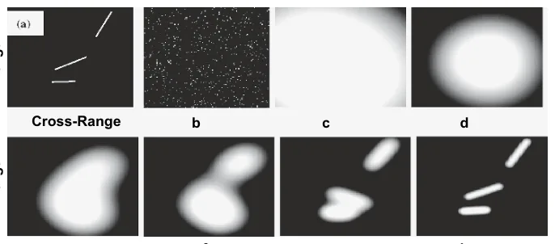
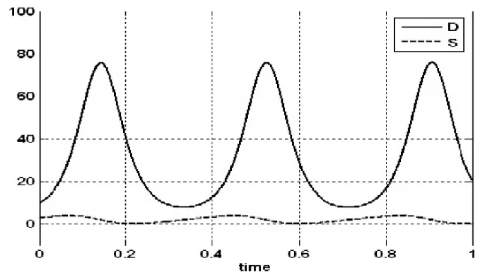
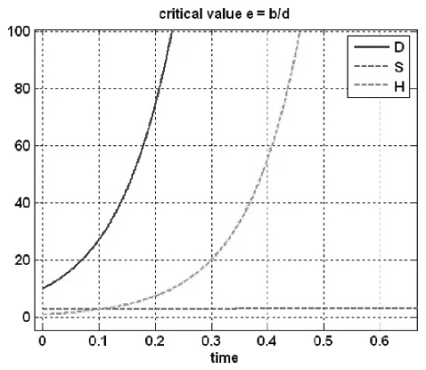
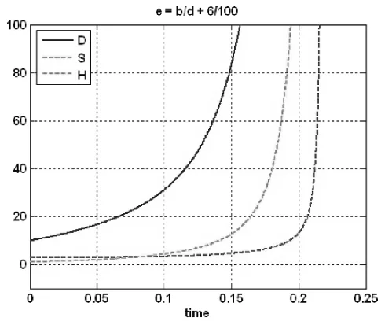
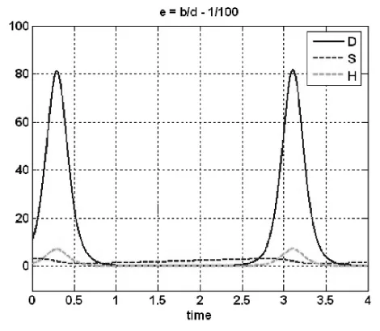
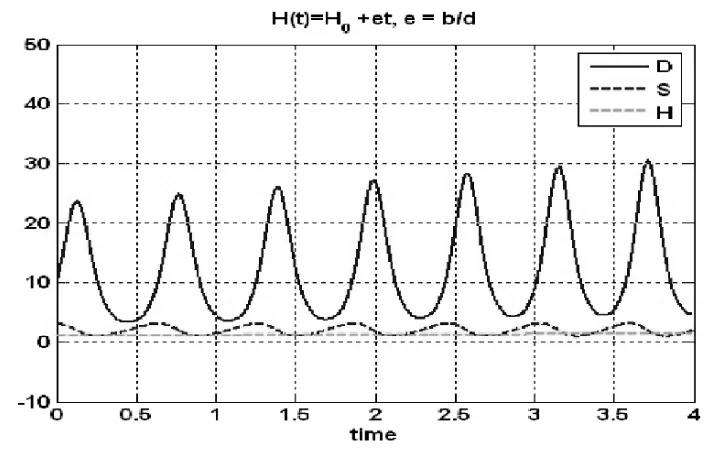
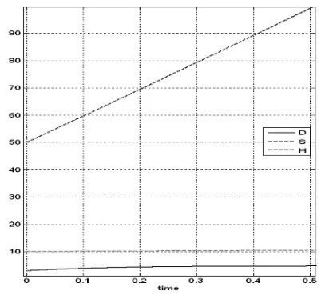
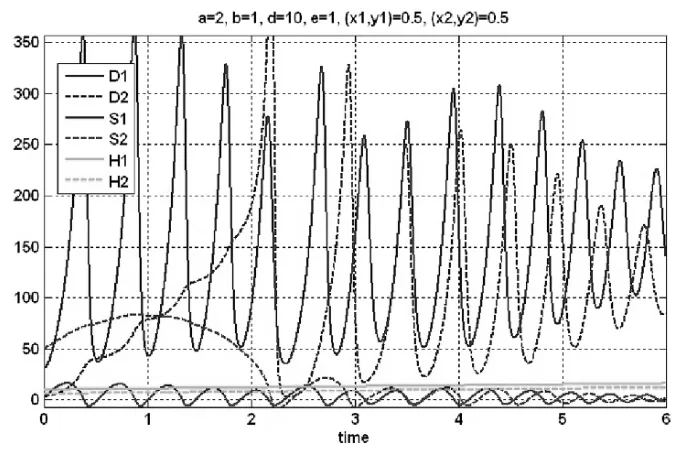
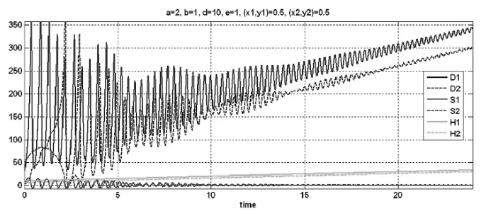
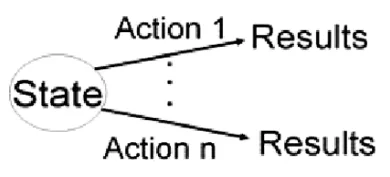

Phần I · Bài 4 — Logic động lực học thần kinh của ý thức: Bản năng tri thức (Perlovsky)
tập hợp các quy tắc này là “logic”. Ông tự hào về phát minh này và nhấn mạnh: “Trước chúng tôi, chưa từng có gì tồn tại trong lĩnh vực này” (Aristotle, thế kỷ IV TCN, a). Tuy nhiên, Aristotle không cho rằng tâm trí hoạt động một cách logic; ông phát minh ra logic như một phương thức lập luận tối cao, chứ không phải như một lý thuyết về tâm trí. Điều này thể hiện rõ qua nhiều tác phẩm của Aristotle, chẳng hạn như cuốn “Tu từ học dành cho Alexander” (Aristotle, thế kỷ IV TCN, b), được ông viết khi học trò của mình là Alexander Đại đế yêu cầu một cuốn cẩm nang về diễn thuyết trước công chúng. Trong cuốn sách này, ông liệt kê hàng chục chủ đề mà Alexander phải phát biểu trước công chúng. Với mỗi chủ đề, Aristotle xác định hai lập trường đối lập (ví dụ: lập hòa hay tuyên chiến; sử dụng hay không sử dụng tra tấn để tìm ra sự thật, v.v.). Aristotle đưa ra các lập luận logic để ủng hộ cho từng lập trường đối lập đó. Rõ ràng, Aristotle xem logic như một công cụ để biện luận cho những quyết định đã được đưa ra; ông không coi logic là cơ chế nền tảng của tâm trí. Có thể nói, logic là công cụ của các chính trị gia. Các nhà khoa học tuân theo logic khi viết bài báo và trình bày tham luận, nhưng không phải để khám phá ra những chân lý mới về tự nhiên.
Để giải thích tâm trí, Aristotle đã phát triển lý thuyết về các Hình thái (Forms), điều sẽ được thảo luận sau. Trong nhiều thế kỷ sau Aristotle, những nét tinh tế trong tư tưởng của ông không phải lúc nào cũng được thấu hiểu. Cùng với sự ra đời của khoa học, trí thông minh thường bị đồng nhất với logic. Vào thế kỷ 19, các nhà toán học khao khát tìm kiếm những chứng minh chính xác cho các mệnh đề toán học đã nhận thấy rằng các ý tưởng của Aristotle về logic là chưa đủ cho mục đích này. Nền tảng của logic, kể từ Aristotle (Aristotle, thế kỷ IV TCN), là quy luật bài trung (hay loại trừ cái thứ ba): mọi mệnh đề hoặc đúng hoặc sai, mọi phương án trung gian đều bị loại trừ. Nhưng Aristotle cũng nhấn mạnh rằng các mệnh đề logic không nên được phát biểu quá chính xác (chẳng hạn, một đấu lúa mì không nên được định nghĩa chính xác đến từng hạt). Ông nhấn mạnh rằng ngôn ngữ ngụ ý mức độ chính xác thích đáng, và mỗi người đều có tâm trí riêng để quyết định điều gì là hợp lý. George Boole cho rằng Aristotle đã sai, rằng mâu thuẫn giữa tính chính xác của quy luật bài trung và tính mơ hồ của ngôn ngữ cần phải được khắc phục.
Bằng cách này, logic hình thức, một nhánh mới của toán học, đã ra đời. Nhiều nhà toán học lỗi lạc đã đóng góp vào sự phát triển của logic hình thức, bao gồm Gottlob Frege, Georg Cantor, Bertrand Russell, David Hilbert và Kurt Gödel. Các nhà logic học đã loại bỏ tính bất định của ngôn ngữ và xây dựng logic toán học hình thức trên quy luật bài trung. Nhiều người trong số họ tin chắc rằng họ đang tìm kiếm các cơ chế chính xác của tâm trí. Hilbert viết: “Ý tưởng nền tảng trong lý thuyết chứng minh của tôi không gì khác hơn là mô tả hoạt động của sự hiểu biết của chúng ta, lập ra một biên bản về các quy tắc mà tư duy của chúng ta thực sự vận hành theo đó.” (Xem Hilbert, 1928). Năm 1900, ông đã phát biểu bài toán Entscheidungsproblem: xác định một tập hợp các quy tắc logic đủ để chứng minh tất cả các định lý toán học trong quá khứ và tương lai. Điều này sẽ hình thức hóa sự sáng tạo khoa học và xác định một cơ chế logic cho toàn bộ tư duy của con người.
Gần như ngay khi Hilbert đề ra chương trình hình thức hóa của mình, lỗ hổng đầu tiên đã xuất hiện. Năm 1902, Russell vạch trần sự bất nhất của logic hình thức bằng cách đưa ra tập hợp R như sau: R là tập hợp của tất cả các tập hợp không phải là phần tử của chính nó. Liệu R có phải là một phần tử của R không? Nếu không, thì theo định nghĩa nó phải thuộc R, nhưng nếu R là một phần tử của R, điều này lại mâu thuẫn với định nghĩa. Do đó, dù theo cách nào cũng dẫn đến mâu thuẫn. Điều này được biết đến với tên gọi nghịch lý Russell. Cách diễn đạt vui của nó như sau: Một người thợ cạo râu cho tất cả những người không tự cạo râu. Người thợ cạo đó có tự cạo râu cho mình không? Dù câu trả lời cho câu hỏi này là gì (có hay không) đều dẫn đến mâu thuẫn.
Người thợ cạo này, cũng giống như tập hợp của Russell, có thể được định nghĩa một cách logic nhưng không thể tồn tại. Trong 25 năm tiếp theo, các nhà toán học đã cố gắng phát triển một nền logic toán học tự nhất quán, không có các nghịch lý dạng này. Nhưng vào năm 1931, Gödel (xem trong Gödel, 1986) đã chứng minh rằng điều đó là bất khả thi, và rằng logic hình thức chắc chắn là bất nhất và tự mâu thuẫn.
Trong một thời gian dài, người ta tin rằng trí thông minh tương đương với suy luận logic khái niệm. Mặc dù rõ ràng tâm trí không phải lúc nào cũng logic, nhưng kể từ những thành công đầu tiên của khoa học, nhiều người đã đi đến chỗ đồng nhất sức mạnh của trí tuệ với logic. Niềm tin vào logic này có nguồn gốc tâm lý sâu xa liên quan đến cách vận hành của tâm trí. Hầu hết các quá trình của tâm trí không được nhận thức một cách có ý thức. Chẳng hạn, chúng ta không nhận thức được từng xung động phát lửa của các nơ-ron riêng lẻ. Chúng ta chỉ ý thức được các trạng thái cuối cùng sinh ra từ các quá trình tri giác và nhận thức; những trạng thái này được tâm trí chúng ta cảm nhận như những “khái niệm” tuân theo logic hình thức một cách gần đúng. Chính vì lý do này mà nhiều người tin vào logic. Ngay cả sau lý thuyết của Gödel, những người sáng lập trí tuệ nhân tạo vẫn khăng khăng rằng logic là đủ để giải thích cách tâm trí hoạt động.
Hãy quay trở lại với Aristotle. Ông đã giải quyết mối quan hệ giữa logic và sự vận hành của tâm trí như sau. Chúng ta hiểu thế giới nhờ vào các Hình thái (biểu tượng, mô hình) trong tâm trí mình. Nhận thức là một quá trình học tập trong đó một Hình thái-dạng-tiềm-năng (mô hình ban đầu) gặp gỡ vật chất (các tín hiệu giác quan) và trở thành một Hình thái-dạng-hiện-thực (một khái niệm). Trong khi các Hình thái-hiện-thực mang tính logic, thì các Hình thái-tiềm-năng không tuân theo logic. Ở đây, Aristotle đã nắm bắt được một khía cạnh quan trọng trong sự vận hành của tâm trí mà nhiều nhà khoa học đương đại đã bỏ sót. Logic không phải là cơ chế nền tảng của tâm trí, mà đúng hơn là kết quả của những hoạt động phi logic của tâm trí. Sau đây chúng tôi sẽ mô tả toán học của logic động, thứ mang lại lời giải thích toán học cho quá trình này: làm thế nào logic xuất hiện từ các trạng thái và quá trình phi logic. Hóa ra logic động tương đương với bản năng tri thức.
3 Các Cơ chế của Tâm trí
Các cơ chế tâm trí cơ bản cấu thành nên các hoạt động của bản năng tri thức sẽ được mô tả bằng toán học trong phần tiếp theo. Ở đây chúng tôi đưa ra một cái nhìn khái niệm sơ bộ về mô tả này. Trong số các cơ chế nhận thức của tâm trí, thứ dễ tiếp cận trực tiếp nhất với ý thức là các khái niệm. Các khái niệm giống như những mô hình nội tại về các sự vật và tình huống trong thế giới. Sự tương đồng này khá sát nghĩa, ví dụ, như đã đề cập, trong quá trình tri giác thị giác về một vật thể, một mô hình-khái niệm trong trí nhớ của chúng ta chiếu một hình ảnh lên vỏ não thị giác, nơi nó được đối chiếu với hình ảnh được chiếu từ võng mạc. Mô tả đơn giản hóa này sẽ được tinh chỉnh ở phần sau.
Các khái niệm phục vụ cho việc thỏa mãn các bản năng cơ bản, những thứ đã xuất hiện như các cơ chế sinh tồn từ rất lâu trước khi có các khái niệm. Những tranh luận hiện nay về bản năng, phản xạ, động lực thúc đẩy và xung lực thường gộp chung nhiều cơ chế khác nhau lại làm một. Điều này không phù hợp cho việc phát triển mô tả toán học về các cơ chế của tâm trí. Tôi đi theo các đề xuất (xem Grossberg & Levine, 1987; Perlovsky 2006, để có thêm tài liệu tham khảo và thảo luận) nhằm tách biệt bản năng với tư cách là các cơ chế cảm biến nội tại báo hiệu những nhu cầu cơ bản, ra khỏi “hành vi bản năng”, vốn cần được mô tả bằng các cơ chế thích hợp. Theo đó, tôi dùng từ “bản năng” để mô tả các cơ chế của cảm biến nội tại: chẳng hạn, khi lượng đường trong máu xuống dưới một mức nhất định, một bản năng “bảo chúng ta” phải ăn. Sự tách biệt bản năng như một “cảm biến nội tại” khỏi “hành vi bản năng” mới chỉ là một bước tiến tới việc xác định toàn bộ các chi tiết của những cơ chế sinh học liên quan.
Làm thế nào chúng ta biết được các nhu cầu bản năng? Bản năng được kết nối với nhận thức và hành vi thông qua cảm xúc. Trong khi theo cách dùng thông thường, cảm xúc thường được hiểu là biểu cảm khuôn mặt, cao độ giọng nói tăng lên, cử chỉ cường điệu, thì đây chỉ là những dấu hiệu bên ngoài của cảm xúc, phục vụ cho giao tiếp. Một vai trò nền tảng hơn của cảm xúc trong hệ thống tâm trí là các tín hiệu cảm xúc đánh giá các khái niệm nhằm mục đích thỏa mãn bản năng. Sự đánh giá này không diễn ra theo các quy tắc hay khái niệm (như trong các hệ thống quy tắc của trí tuệ nhân tạo), mà theo một cơ chế bản năng-cảm xúc khác, được mô tả lần đầu bởi Grossberg và Levine (1987); vai trò của cảm xúc trong sự vận hành của tâm trí được xem xét trong cuốn sách này ở chương của Daniel Levine. Dưới đây chúng tôi mô tả các cơ chế cảm xúc cho các chức năng nhận thức bậc cao hơn.
Những cảm xúc đánh giá sự thỏa mãn hay bất mãn của bản năng tri thức không liên quan trực tiếp đến các nhu cầu thể xác. Do đó, chúng là những cảm xúc “tinh thần”. Chúng ta cảm nhận chúng như sự hài hòa–bất hòa giữa tri thức của chúng ta và thế giới (giữa sự hiểu biết của chúng ta về việc mọi thứ lẽ ra phải thế nào và thực tế chúng đang diễn ra ra sao trong thế giới xung quanh). Theo Immanuel Kant [7], đây là những cảm xúc thẩm mỹ (những cảm xúc không liên quan trực tiếp đến sự thỏa mãn hay bất mãn của các nhu cầu thể xác).
Các cảm xúc thẩm mỹ liên quan đến việc học tập có thể nhận thấy trực tiếp ở trẻ em. Bản năng tri thức khiến trẻ nhỏ, thú con và lợn con nhảy nhót xung quanh và chơi trò đánh nhau giả. Các mô hình hành vi bẩm sinh của chúng phải thích nghi với trọng lượng cơ thể, các đồ vật và những con vật xung quanh từ rất lâu trước khi bản năng đói và sợ hãi sử dụng các mô hình đó cho những mục đích sinh tồn trực tiếp. Trong đời sống trưởng thành, khi tri giác và sự hiểu biết của chúng ta về thế giới xung quanh là đầy đủ, các cảm xúc thẩm mỹ hầu như không thể nhận thấy: tâm trí chỉ làm công việc của nó. Tương tự, chúng ta thường không để ý đến hoạt động bình thường của các cơ hô hấp và sự thỏa mãn của bản năng hít thở. Tuy nhiên, nếu việc thở trở nên khó khăn, những cảm xúc tiêu cực lập tức chạm tới ý thức. Điều tương tự cũng đúng với bản năng tri thức và cảm xúc thẩm mỹ: nếu chúng ta không hiểu môi trường xung quanh, nếu các sự vật xung quanh không tương ứng với kỳ vọng của chúng ta, những cảm xúc tiêu cực lập tức chạm tới ý thức. Chúng ta cảm nhận những cảm xúc này như sự bất hòa giữa tri thức của mình và thế giới. Phim giật gân khai thác bản năng tri thức: các nhân vật của chúng được đặt vào những tình huống mà tri thức về thế giới không đủ để sinh tồn.
Tôi xin nhấn mạnh lại một lần nữa, cảm xúc thẩm mỹ không phải là đặc quyền của nghệ thuật và nghệ sĩ, chúng không thể tách rời khỏi mọi hành vi tri giác và nhận thức. Trong đời sống hằng ngày, chúng ta thường không nhận thấy chúng. Cảm xúc thẩm mỹ trở nên rõ rệt ở các cấp độ nhận thức cao hơn trong hệ thống thứ bậc của tâm trí, khi nhận thức không mang tính tự động mà đòi hỏi nỗ lực có ý thức. Quan điểm của Antonio Damasio [8] về cảm xúc được định nghĩa bởi các cơ chế nội tạng, xét trong phạm vi bàn luận về các chức năng nhận thức bậc cao hơn, dường như đã sai lầm khi lấy các hiệu ứng thứ cấp làm cơ chế sơ cấp.
Trong phần tiếp theo, chúng tôi mô tả một lý thuyết toán học về sự nhận dạng và thấu hiểu khái niệm-cảm xúc, vốn là bản chất của động lực học nhận thức thần kinh. Như chúng ta sẽ thảo luận, ngoài khái niệm và cảm xúc, lý thuyết này còn liên quan đến các cơ chế của trực giác, trí tưởng tượng, ý thức và vô thức. Quá trình này gắn bó mật thiết với khả năng tư duy của tâm trí, khả năng thao tác với các biểu tượng và ký hiệu. Tâm trí bao gồm một dị thứ bậc (heterarchy) gồm nhiều cấp độ. Nó không phải là một thứ bậc nghiêm ngặt, mà là một dị thứ bậc, bởi vì nó có các kết nối phản hồi xuyên suốt nhiều cấp độ; để đơn giản hóa việc thảo luận, chúng tôi thường gọi cấu trúc tâm trí là một hệ thống thứ bậc. Hệ thống thứ bậc gồm nhiều cấp độ của các cơ chế nhận thức: bản năng tri thức, mô hình-khái niệm và cảm xúc, vận hành ở mỗi cấp độ từ các yếu tố tri giác đơn giản (như các cạnh, hoặc các chấm chuyển động), đến các mô hình-khái niệm về sự vật, đến các mối quan hệ giữa các sự vật, đến các khung cảnh phức tạp, và đi lên theo hệ thống thứ bậc... hướng tới các mô hình-khái niệm về ý nghĩa cuộc sống và mục đích tồn tại của chúng ta. Do đó, tâm trí có sự phức tạp khổng lồ, nhưng chỉ một số ít nguyên lý cơ bản về tổ chức tâm trí đã giải thích được sự tiến hóa thần kinh của hệ thống này.
4 Trường Mô hình hóa Thần kinh
Trường Mô hình hóa Thần kinh (Neural Modeling Fields - NMF) là một kiến trúc thần kinh hiện thực hóa bằng toán học các cơ chế của tâm trí đã thảo luận ở trên. Đây là một hệ thống dị thứ bậc đa cấp độ [9]. Tâm trí không phải là một thứ bậc nghiêm ngặt; có nhiều kết nối phản hồi giữa các cấp độ liền kề, do đó mới có thuật ngữ dị thứ bậc. Ở mỗi cấp độ trong NMF đều có các mô hình-khái niệm bao gói tri thức của tâm trí; chúng tạo ra cái gọi là các tín hiệu từ trên xuống (top-down), tương tác với các tín hiệu đầu vào từ dưới lên (bottom-up). Những tương tác này được chi phối bởi bản năng tri thức, thứ thúc đẩy việc học tập, thích nghi mô hình-khái niệm và hình thành các mô hình-khái niệm mới để tương ứng tốt hơn với các tín hiệu đầu vào.
Phần này mô tả một cơ chế tương tác cơ bản giữa hai cấp độ thứ bậc liền kề của các tín hiệu từ dưới lên và từ trên xuống (các trường kích hoạt thần kinh). Đôi khi sẽ thuận tiện hơn khi nói về hai cấp độ tín hiệu này như một đầu vào và một đầu ra của một cấp độ xử lý (đơn lẻ). Ở mỗi cấp độ, các tín hiệu đầu ra là những khái niệm được nhận dạng trong (hoặc được hình thành từ) các tín hiệu đầu vào. Các tín hiệu đầu vào được liên kết với (hoặc được nhận dạng, hoặc được nhóm vào) các khái niệm theo các mô hình và bản năng tri thức ở cấp độ này. Cấu trúc tổng quát này của NMF tương ứng với hiểu biết của chúng ta về các cấu trúc thần kinh trong não bộ; tuy nhiên, trong chương này chúng tôi không ánh xạ chi tiết các cơ chế toán học vào từng nơ-ron hay kết nối khớp thần kinh cụ thể.
Ở một cấp độ thứ bậc cụ thể, chúng ta đánh số các nơ-ron bằng chỉ số n =1,... N. Các nơ-ron này nhận các tín hiệu đầu vào từ dưới lên, X(n), từ các cấp độ thấp hơn trong hệ thống thứ bậc xử lý. X(n) là một trường kích hoạt khớp thần kinh của nơ-ron từ dưới lên, đến từ các nơ-ron ở cấp độ thấp hơn. Mỗi nơ-ron có một số lượng khớp thần kinh nhất định. Để tổng quát, chúng ta mô tả mỗi kích hoạt nơ-ron như một tập hợp các con số, X(n) = {Xd(n), d = 1,... D}. Các tín hiệu từ trên xuống, hay tín hiệu mồi, tới các nơ-ron này được gửi bởi các mô hình-khái niệm, Mh(Sh,n), và chúng ta đánh số các mô hình bằng chỉ số h =1,... H. Mỗi mô hình được đặc trưng bởi các tham số của nó, Sh; trong cấu trúc nơ-ron của não bộ, chúng được mã hóa bằng cường độ của các kết nối khớp thần kinh. Về mặt toán học, chúng ta mô tả chúng như một tập hợp các con số, Sh= {Sa h, a = 1,... A}. Các mô hình biểu diễn tín hiệu theo cách sau. Giả sử, tín hiệu X(n) đến từ các nơ-ron giác quan được kích hoạt bởi vật thể h, được đặc trưng bởi mô hình Mh(Sh,n) và các giá trị tham số Sh. Các tham số này có thể bao gồm vị trí, hướng hoặc độ chiếu sáng của vật thể h. Mô hình Mh(Sh,n) dự đoán một giá trị X(n) của tín hiệu tại nơ-ron n. Chẳng hạn, trong quá trình tri giác thị giác, một nơ-ron n trong vỏ não thị giác nhận tín hiệu X(n) từ võng mạc và tín hiệu mồi Mh(Sh,n) từ một mô hình-khái niệm-vật-thể h. Một nơ-ron n được kích hoạt nếu cả tín hiệu từ dưới lên từ đầu vào cấp thấp hơn và tín hiệu mồi từ trên xuống đều mạnh. Các mô hình khác nhau cạnh tranh nhau để giành bằng chứng trong các tín hiệu từ dưới lên, đồng thời điều chỉnh các tham số của chúng để khớp tốt hơn như được mô tả dưới đây. Đây là một mô tả đơn giản hóa về tri giác. Ngay cả tri giác thị giác thông thường nhất hằng ngày cũng sử dụng nhiều cấp độ từ võng mạc đến tri giác vật thể. Tiền đề của NMF là cùng một quy luật sẽ mô tả động lực học tương tác cơ bản ở mỗi cấp độ. Tri giác các đặc trưng nhỏ nhặt, hay các vật thể thường ngày, hay nhận thức các khái niệm trừu tượng phức tạp đều do cùng một cơ chế được mô tả trong phần này. Tri giác và nhận thức liên quan đến các mô hình và việc học tập. Trong tri giác, các mô hình tương ứng với các vật thể; trong nhận thức, các mô hình tương ứng với các mối quan hệ và tình huống.
Bản năng tri thức thúc đẩy việc học tập, vốn là một phần thiết yếu của tri giác và nhận thức. Việc học tập làm tăng một độ đo tương đồng giữa các tập hợp mô hình và tín hiệu, L({X},{M}). Độ đo tương đồng là một hàm của các tham số mô hình và các liên kết giữa tín hiệu đầu vào từ dưới lên và tín hiệu mô hình-khái niệm từ trên xuống. Để cụ thể, ở đây tôi đề cập đến một tri giác vật thể bằng cách sử dụng thuật ngữ đơn giản hóa, như thể việc tri giác các vật thể trong tín hiệu võng mạc diễn ra ở một cấp độ duy nhất.
Khi xây dựng một mô tả toán học cho độ đo tương đồng, điều quan trọng là phải thừa nhận hai nguyên lý (vốn gần như hiển nhiên) [10]. Thứ nhất, nội dung trường thị giác là chưa biết trước khi tri giác xảy ra và thứ hai, nó có thể chứa bất kỳ số lượng vật thể nào. Thông tin quan trọng có thể nằm trong bất kỳ tín hiệu từ dưới lên nào; do đó, độ đo tương đồng được xây dựng sao cho nó tính đến tất cả các tín hiệu từ dưới lên, X(n),
L({X}, {M}) =
l(X(n)). (1) n∈N
Biểu thức này chứa một tích của các độ tương đồng thành phần, l(X(n)), trên tất cả các tín hiệu từ dưới lên; do đó nó buộc tâm trí phải tính đến mọi tín hiệu (ngay cả khi chỉ một số hạng trong tích bằng không, tích sẽ bằng không, độ tương đồng thấp và bản năng tri thức không được thỏa mãn); đây là sự phản ánh của nguyên lý thứ nhất. Thứ hai, trước khi tri giác xảy ra, tâm trí không biết vật thể nào đã tạo ra tín hiệu từ một nơ-ron võng mạc cụ thể. Do đó, một độ đo tương đồng thành phần được xây dựng sao cho nó coi mỗi mô hình như một phương án thay thế (một tổng trên các mô hình) cho mỗi tín hiệu nơ-ron đầu vào. Các yếu tố cấu thành của nó là các độ tương đồng thành phần có điều kiện giữa tín hiệu X(n) và mô hình Mh, l(X(n)|h). Độ đo này là “có điều kiện” với giả định vật thể h có mặt, do đó, khi kết hợp các đại lượng này thành độ đo tương đồng tổng thể, L, chúng được nhân với r(h), đại diện cho một độ đo xác suất về việc vật thể h thực sự có mặt. Kết hợp các yếu tố này với hai nguyên lý đã nêu ở trên, một độ đo tương đồng được xây dựng như sau:
L({X}, {M}) =
r(h)l(X(n)|h). (2) n∈N h∈H
Cấu trúc của (2) tuân theo các nguyên lý chuẩn của lý thuyết xác suất: một phép lấy tổng được thực hiện trên các phương án thay thế, h, và các mảnh bằng chứng khác nhau, n, được nhân với nhau. Biểu thức này không nhất thiết là một xác suất, nhưng nó có cấu trúc xác suất. Nếu việc học tập thành công, nó xấp xỉ mô tả xác suất và dẫn đến các quyết định Bayes gần tối ưu. Tên gọi “độ tương đồng thành phần có điều kiện” cho l(X(n)|h) (hay đơn giản là l(n|h)) tuân theo thuật ngữ xác suất. Nếu việc học tập thành công, l(n|h) trở thành một hàm mật độ xác suất có điều kiện, một thước đo xác suất cho thấy tín hiệu ở nơ-ron n bắt nguồn từ vật thể h. Khi đó L là một hàm hợp lý tổng thể của việc quan sát các tín hiệu {X(n)} đến từ các vật thể được mô tả bởi các mô hình {Mh}. Các hệ số r(h), được gọi là xác suất tiên nghiệm (priors) trong lý thuyết xác suất, chứa các thiên kiến hoặc kỳ vọng ban đầu, các vật thể h được kỳ vọng sẽ có giá trị r(h) tương đối cao; giá trị thực của chúng thường chưa biết và cần được học, giống như các tham số Sh khác.
Chúng ta lưu ý rằng trong lý thuyết xác suất, một tích của các xác suất thường giả định rằng các bằng chứng là độc lập. Biểu thức (2) chứa một tích trên n, nhưng nó không giả định sự độc lập giữa các tín hiệu X(n) khác nhau. Các độ tương đồng thành phần l(n|h) được cấu trúc theo cách (sẽ mô tả sau) sao cho chúng phụ thuộc vào sự khác biệt giữa tín hiệu và mô hình; những khác biệt này là do sai số đo lường và có thể được coi là độc lập. Có một sự phụ thuộc giữa các tín hiệu do các mô hình tạo ra: mỗi mô hình Mh(Sh,n) dự đoán các giá trị tín hiệu kỳ vọng ở nhiều nơ-ron n.
Trong quá trình học tập, các mô hình-khái niệm liên tục được điều chỉnh. Ở đây chúng ta xét trường hợp khi các dạng hàm của mô hình, Mh(Sh,n), đều cố định và việc học tập-thích nghi chỉ liên quan đến các tham số mô hình, Sh. Việc học cấu trúc phức tạp hơn của các mô hình được xem xét trong [11, 12]. Thỉnh thoảng một hệ thống hình thành một khái niệm mới, đồng thời vẫn giữ lại khái niệm cũ; hoặc ngược lại, các khái niệm cũ đôi khi được gộp lại hoặc loại bỏ. Điều này đòi hỏi một sự sửa đổi đối với độ đo tương đồng (2); lý do là càng nhiều mô hình thì luôn dẫn đến sự khớp tốt hơn giữa mô hình và dữ liệu. Đây là một vấn đề đã được biết rõ, nó được giải quyết bằng cách giảm độ tương đồng (2) sử dụng một “hàm phạt hoài nghi” (skeptic penalty function), p(N,M) tăng theo số lượng mô hình M, và sự tăng này càng dốc khi lượng dữ liệu N càng nhỏ. Chẳng hạn, một ước lượng hợp lý cực đại không chệch tiệm cận dẫn đến hệ số nhân p(N,M) = exp(-Npar/2), trong đó Npar là tổng số tham số thích nghi trong tất cả các mô hình (hàm phạt này được gọi là Tiêu chuẩn Thông tin Akaike, xem [9] để biết thêm thảo luận và tài liệu tham khảo).
Bản năng tri thức đòi hỏi tối đa hóa độ tương đồng (2) bằng cách ước lượng các tham số mô hình S và liên kết các tín hiệu với các khái niệm. Lưu ý rằng tất cả các tổ hợp có thể có của tín hiệu và mô hình đều được tính đến trong biểu thức (2). Điều này có thể thấy bằng cách khai triển một tổng trong (2), và nhân tất cả các số hạng; nó sẽ tạo ra HN số hạng, một con số rất lớn. Đây là số lượng các tổ hợp giữa tất cả các tín hiệu (N) và tất cả các mô hình (H).
Số lượng tổ hợp rất lớn này là nguồn gốc của những khó khăn (mà chúng tôi gọi là độ phức tạp tổ hợp, CC) đối với việc phát triển các thuật toán và hệ thống thông minh kể từ thập niên 1950. Vấn đề này lần đầu tiên được xác định trong nghiên cứu nhận dạng mẫu và phân loại vào thập niên 1960 và được đặt tên là “lời nguyền của số chiều” (the curse of dimensionality) [13]. Từng có vẻ như các thuật toán tự học thích nghi và mạng nơ-ron có thể tự mình học giải pháp cho bất kỳ vấn đề nào nếu được cung cấp đủ số lượng ví dụ huấn luyện. Hóa ra các ví dụ huấn luyện không chỉ phải bao gồm tất cả các vật thể riêng lẻ cần nhận dạng, mà còn cả các vật thể trong ngữ cảnh, tức là các tổ hợp vật thể. Các phương pháp tự học đã vấp phải CC của các yêu cầu học tập.
Các hệ thống dựa trên quy tắc đã được đề xuất vào thập niên 1960 để giải quyết vấn đề phức tạp của việc học. Ý tưởng ban đầu là các quy tắc sẽ nắm bắt được tri thức cần thiết và loại bỏ nhu cầu học tập [14]. Tuy nhiên, khi có sự biến thiên, số lượng quy tắc tăng lên; quy tắc phụ thuộc vào các quy tắc khác, các tổ hợp quy tắc phải được xem xét và các hệ thống quy tắc đã vấp phải CC của các quy tắc. Bắt đầu từ thập niên 1980, các hệ thống dựa trên mô hình đã được đề xuất. Chúng sử dụng các mô hình phụ thuộc vào các tham số thích nghi. Ý tưởng là kết hợp ưu điểm của khả năng học tập-thích nghi và các quy tắc bằng cách sử dụng các mô hình thích nghi. Tri thức được gói gọn trong các mô hình, trong khi các khía cạnh chưa biết của từng tình huống cụ thể sẽ được học bằng cách khớp các tham số mô hình (xem [15] và thảo luận trong [9, 16]). Việc khớp mô hình với dữ liệu đòi hỏi phải chọn các tập con dữ liệu tương ứng với các mô hình khác nhau. Tuy nhiên, số lượng tập con là lớn theo kiểu tổ hợp (NM như đã thảo luận ở trên). Một thuật toán phổ biến chung để khớp mô hình với dữ liệu, kiểm định đa giả thuyết [17], được biết là phải đối mặt với CC của tính toán. Các phương pháp dựa trên mô hình đã vấp phải CC tính toán (các thuật toán N và NP đầy đủ).
Hóa ra CC có liên quan đến kết quả toán học nền tảng nhất của thế kỷ 20, lý thuyết của Gödel về sự bất nhất của logic [18, 19]. Logic hình thức dựa trên “quy luật bài trung”, theo đó mọi mệnh đề hoặc đúng hoặc sai và không có gì ở giữa. Do đó, các thuật toán dựa trên logic hình thức phải đánh giá mọi biến thể trong dữ liệu hoặc mô hình như một mệnh đề logic (giả thuyết) riêng biệt. CC của các thuật toán dựa trên logic là một biểu hiện của sự bất nhất của logic trong các hệ thống hữu hạn. Logic đa trị và logic mờ đã được đề xuất để vượt qua những hạn chế liên quan đến quy luật loại trừ cái thứ ba [20]. Tuy nhiên, toán học của logic đa trị về nguyên tắc không khác gì logic hình thức, “loại trừ cái thứ ba” được thay thế bằng “loại trừ cái thứ n+1”. Logic mờ gặp phải một khó khăn liên quan đến mức độ mờ. Các hệ thống phức tạp đòi hỏi các mức độ mờ khác nhau trong các hệ thống con khác nhau, thay đổi theo hoạt động của hệ thống; việc tìm kiếm các mức độ mờ thích hợp giữa các tổ hợp phần tử một lần nữa lại dẫn đến CC. Liệu logic có còn khả thi sau Gödel không? Một đánh giá gần đây về tình trạng đương đại của lĩnh vực này cho thấy logic sau Gödel phức tạp hơn nhiều và kém logic hơn nhiều so với những gì các nhà sáng lập trí tuệ nhân tạo từng giả định. Vấn đề CC vẫn chưa được giải quyết trong phạm vi của logic [21].
Các biểu hiện khác nhau của CC đều liên quan đến logic hình thức và lý thuyết Gödel. Các hệ thống quy tắc dựa vào logic hình thức theo cách trực tiếp nhất. Các thuật toán tự học và mạng nơ-ron dựa vào logic trong các quy trình huấn luyện hoặc học tập của chúng, mỗi ví dụ huấn luyện được coi là một mệnh đề logic riêng biệt. Các hệ thống logic mờ dựa vào logic để thiết lập các mức độ mờ. CC của các phương pháp toán học tiếp cận lý thuyết về tâm trí có liên quan đến sự bất nhất nền tảng của logic.
5 Logic Động
5.1 Công thức Toán học
NMF giải quyết vấn đề CC bằng cách sử dụng logic động [10, 22, 23, 24]. Một khía cạnh quan trọng của logic động là làm tương thích sự mơ hồ hay độ mờ của các độ đo tương đồng với độ bất định của các mô hình. Ban đầu, các giá trị tham số chưa được biết, và độ bất định của các mô hình là cao; độ mờ của các độ đo tương đồng cũng vậy. Trong quá trình học, các mô hình trở nên chính xác hơn, và độ đo tương đồng trở nên sắc nét hơn, giá trị của độ tương đồng tăng lên. Đây là cơ chế của logic động.
Về mặt toán học, nó được mô tả như sau. Đầu tiên, gán bất kỳ giá trị nào cho các tham số chưa biết, {Sh}. Sau đó, tính các biến liên kết f(h|n), r(h′)l(X(n)|h′). (3) f(h|n) = r(h)l(X(n)|h)/ h′∈H
Phương trình (3) trông giống như công thức Bayes cho các xác suất hậu nghiệm; nếu l(n|h) trong kết quả học tập trở thành các hàm hợp lý có điều kiện, f(h|n) sẽ trở thành các xác suất Bayes cho việc tín hiệu n bắt nguồn từ vật thể h. Logic động của NMF được định nghĩa như sau,
{δhh′ −f(h′|n)· df(h|n)/dt = f(h|n) h′∈H
∂lnl(n|h′)/∂Mh′
∂Mh′/∂Sh′ · dSh′/dt, (4)
dSh/dt = f(h|n)
∂lnl(n|h)/∂Mh
∂Mh/∂Sh, (5) n∈N ở đây δhh′ bằng 1 nếu h = h′, bằng 0 trong trường hợp khác. (6)
Tham số t là thời gian của động lực học nội tại của hệ thống MF (như số lượng các lần lặp nội bộ). Các phương trình này định nghĩa động lực học thần kinh của NMF.
Các hàm dạng Gauss thường có thể được sử dụng cho các độ tương đồng thành phần có điều kiện, l(n|h) = G(X(n)|Mh(Sh, n), Ch). (7)
Ở đây G là một hàm Gauss với kỳ vọng Mh và ma trận hiệp phương sai Ch. Lưu ý, một “giả định Gauss” thường được sử dụng trong thống kê; nó giả định rằng phân phối tín hiệu là phân phối Gauss. Đây không phải là trường hợp trong (7): ở đây tín hiệu không được giả định là phân phối Gauss. Phương trình (7) hợp lệ nếu các độ lệch giữa mô hình M và tín hiệu X là phân phối Gauss; những độ lệch này thường do nhiều nguyên nhân ngẫu nhiên và do đó tuân theo phân phối Gauss. Nếu chúng không phải là Gauss, các hàm thích hợp có thể được sử dụng. Nếu không có thông tin về dạng hàm của các độ tương đồng thành phần có điều kiện, thì (7) vẫn là một lựa chọn tốt, nó không phải là một giả định hạn chế: một tổng có trọng số của các hàm Gauss trong (2) có thể xấp xỉ bất kỳ hàm dương nào, như độ tương đồng.
Các ma trận hiệp phương sai, Ch, trong (7) được ước lượng giống như các tham số chưa biết khác, như được chỉ ra trong (5). Ban đầu chúng được đặt ở các giá trị lớn, tương ứng với độ bất định trong hiểu biết về các mô hình, Mh. Khi các giá trị tham số và mô hình được cải thiện, các hiệp phương sai giảm xuống còn các sai khác nội tại giữa mô hình và tín hiệu (do lỗi cảm biến, hoặc sự thiếu chính xác của mô hình). Khi các hiệp phương sai nhỏ đi, các độ tương đồng trở nên sắc nét hơn, gần với các hàm delta hơn; các biến liên kết (3) tiến gần hơn tới các giá trị sắc nét {0, 1}, và các nghiệm logic động hội tụ về logic sắc nét (crisp logic). Quá trình cải thiện tham số đồng thời và hội tụ của độ tương đồng về một hàm logic sắc nét là một phần thiết yếu của logic động. Đây là cơ chế của logic động định nghĩa động lực học thần kinh của NMF.
Sự tiến hóa động của độ mờ từ lớn đến nhỏ là lý do cho tên gọi “logic động”. Về mặt toán học, cơ chế này giúp tránh các cực đại địa phương trong quá trình hội tụ [9, 22, 25], và về mặt tâm lý học, nó giải thích nhiều tính chất của tâm trí, như sẽ thảo luận sau. Bất kỳ dạng hàm nào được sử dụng cho các độ tương đồng thành phần có điều kiện, chúng đều phải cho phép quá trình hội tụ đồng bộ này về giá trị tham số và độ sắc nét của độ tương đồng. Não bộ có thể sử dụng nhiều cơ chế khác nhau để hiện thực hóa quá trình logic động ở các giai đoạn khác nhau. Chương trong cuốn sách này của Emilio Del-Moral-Hernandez xem xét các mạng nơ-ron với các phần tử xử lý đệ quy (RPE), có thể triển khai logic động thông qua động lực học hỗn loạn của chúng. Trong các mạng nơ-ron RPE, độ mơ hồ cao của các trạng thái logic động và sự bất mãn của bản năng tri thức tương ứng với giá trị cao của tham số p và với các tìm kiếm rộng mang tính hỗn loạn. Độ mơ hồ thấp, tri giác và nhận thức thành công, và sự thỏa mãn bản năng tri thức tương ứng với giá trị p thấp và động lực học có trật tự. Sự tương ứng tương tự giữa logic động, bản năng tri thức và động lực học hỗn loạn có thể áp dụng cho các thảo luận trong chương của Walter Freeman trong cuốn sách này. Logic động dường như tương ứng với các chuyển đổi từ trạng thái hỗn loạn cao sang trạng thái hỗn loạn thấp hơn trong hoạt động thần kinh vỏ não.
Định lý sau đây đã được chứng minh [9]. Định lý. Các phương trình (3) đến (6) định nghĩa một hệ thống NMF động hội tụ với các trạng thái dừng được xác định bởi max{Sh}L.
Theo đó, các trạng thái dừng của một hệ thống NMF là các trạng thái có độ tương đồng cực đại thỏa mãn bản năng tri thức. Khi các độ tương đồng thành phần được chỉ định là các hàm mật độ xác suất (pdf), hoặc các hàm hợp lý, các giá trị dừng của các tham số {Sh} là các ước lượng không chệch tiệm cận và hiệu quả của các tham số này [26]. Độ phức tạp tính toán của logic động là tuyến tính theo N.
Nói một cách dễ hiểu, điều này có nghĩa là logic động là một quá trình hội tụ. Nó hội tụ về cực đại của độ tương đồng, và do đó thỏa mãn bản năng tri thức.
Một số khía cạnh về sự hội tụ của NMF sẽ được thảo luận trong các phần sau. Nếu hàm hợp lý được sử dụng làm độ tương đồng, các giá trị tham số được ước lượng một cách hiệu quả (tức là, trong hầu hết các trường hợp, các tham số không thể được học tốt hơn bằng bất kỳ quy trình nào khác). Hơn nữa, như một phần của định lý trên, người ta đã chứng minh rằng độ đo tương đồng tăng lên sau mỗi lần lặp. Diễn giải tâm lý học là bản năng tri thức được thỏa mãn ở mỗi bước: một hệ thống NMF với logic động thích thú với việc học tập.
Hãy nhấn mạnh lại một lần nữa, tính chất nền tảng của logic động là sự tiến hóa từ các trạng thái mơ hồ, bất định, mờ, vô thức sang các trạng thái sắc nét hơn, chắc chắn hơn, có ý thức hơn.
5.2 Ví dụ về Hoạt động
Hoạt động của NMF được minh họa trong Hình 1 bằng một ví dụ về phát hiện và theo dõi các vật thể chuyển động trong nhiễu nền (clutter) [27]. Theo dõi là một bài toán kinh điển, trở nên phức tạp theo kiểu tổ hợp trong nhiễu nền khi các tín hiệu mục tiêu nằm dưới mức nhiễu nền. Việc giải quyết bài toán này thường được tiếp cận bằng thuật toán theo dõi đa giả thuyết [28], vốn đánh giá nhiều giả thuyết về việc tín hiệu nào đến từ vật thể chuyển động nào, và tín hiệu nào đến từ nhiễu nền. Phương pháp chuẩn này nổi tiếng là phải đối mặt với CC [9], vì phải xem xét một số lượng lớn các tổ hợp tín hiệu và mô hình. Hình 1 minh họa động lực học thần kinh NMF khi giải quyết bài toán này.
Hình 1(a) cho thấy các vị trí quỹ đạo thực, trong khi Hình 1(b) cho thấy dữ liệu thực tế có sẵn để phát hiện và theo dõi. Nó chứa 6 lần quét cảm biến chồng lên nhau (trục thời gian không được hiển thị). Tập dữ liệu gồm 3000 điểm dữ liệu, 18 điểm trong số đó

e g n a R e g n a R e g n a R e g n a R
Cự ly ngang
b c d e g n a R e g n a R e f g h e f g h
Hình 1 Phát hiện và theo dõi các vật thể dưới mức nhiễu nền bằng NMF: (a) các vị trí quỹ đạo thực; (b) dữ liệu thực tế có sẵn để phát hiện và theo dõi. Sự tiến hóa của mạng nơ-ron NMF được thúc đẩy bởi bản năng tri thức được thể hiện trong (c)–(h), trong đó (c) cho thấy mô hình ban đầu, bất định, và (h) cho thấy mô hình khi hội tụ sau 20 lần lặp. Mô hình hội tụ (h) khớp sát với sự thật (a). Cải thiện hiệu suất khoảng 100 lần về tỷ số tín hiệu trên nhiễu nền đạt được nhờ sự tiến hóa của logic động từ các mô hình mơ hồ và bất định sang sắc nét và chắc chắn thuộc về ba vật thể chuyển động. Trong dữ liệu này, tín hiệu phản hồi từ mục tiêu bị chôn vùi trong nhiễu nền, với các tín hiệu yếu hơn nhiễu nền (theo hệ số 2). Các hình 1(c)–1(h) minh họa sự tiến hóa của các mô hình NMF khi chúng thích nghi với dữ liệu qua các lần lặp. Hình 1(c) cho thấy mô hình mờ-mơ hồ ban đầu, trong khi Hình 1(h) cho thấy mô hình khi hội tụ ở 20 lần lặp. Giữa (c) và (h), mạng nơ-ron NMF tự động quyết định cần bao nhiêu thành phần mô hình để khớp dữ liệu, và đồng thời điều chỉnh các tham số mô hình, bao gồm các hệ số quỹ đạo mục tiêu. Có hai loại mô hình: một mô hình đồng nhất mô tả nhiễu nền (không được hiển thị), và các mô hình quỹ đạo tuyến tính với độ bất định lớn. Trong (c) và (d), mạng nơ-ron NMF khớp dữ liệu với một mô hình, và độ bất định giảm đi phần nào. Giữa (d) và (e), NMF quyết định rằng nó cần hai mô hình để “hiểu” nội dung của dữ liệu. Việc khớp với 2 quỹ đạo tiếp tục cho đến (f); giữa (f) và (g) một quỹ đạo thứ ba được thêm vào. Các lần lặp dừng lại ở (h), khi độ tương đồng ngừng tăng. Các quỹ đạo được phát hiện tương ứng chặt chẽ với sự thật (a). Trong trường hợp này, NMF đã phát hiện và theo dõi thành công cả ba vật thể và chỉ đòi hỏi 106 phép toán, trong khi việc áp dụng trực tiếp thuật toán theo dõi đa giả thuyết sẽ đòi hỏi HN∼101500 phép toán. Con số này, lớn hơn kích thước của Vũ trụ và quá lớn để tính toán, ngăn cản các thuật toán trước đây giải quyết bài toán này. NMF vượt qua khó khăn này đã đạt được sự cải thiện khoảng 100 lần về tỷ số tín hiệu trên nhiễu nền. Sự cải thiện này đạt được bằng cách sử dụng sự tiến hóa động từ các mô hình mơ hồ và bất định sang sắc nét và chắc chắn (thay vì dò xét qua các tổ hợp).
6 Ý thức, Vô thức và Sự Phân hóa
Động lực học NMF được mô tả ở trên thỏa mãn bản năng tri thức và cải thiện tri thức bằng cách tiến hóa các mô hình mơ hồ, bất định hướng tới các mô hình sắc nét, giúp tối đa hóa độ tương đồng giữa mô hình và dữ liệu. Quá trình tích lũy tri thức này, được thúc đẩy bởi bản năng tri thức, diễn ra trong tâm trí của mỗi thành viên trong một xã hội và cấu thành một khía cạnh thiết yếu của sự tiến hóa văn hóa. Các mô hình mơ hồ và bất định ít tiếp cận được với ý thức hơn, trong khi các mô hình sắc nét và cụ thể mang tính ý thức cao hơn.
Hầu hết các hoạt động của tâm trí không thể tiếp cận được với ý thức. Chúng ta chắc chắn biết rằng các xung động phát lửa và kết nối thần kinh không thể được tri giác một cách có ý thức. Ở nền tảng của tâm trí có những quá trình vật chất trong não bộ không thể tiếp cận với ý thức. Jung gợi ý rằng các khái niệm có ý thức được tâm trí phát triển dựa trên các cấu trúc di truyền về mặt gen, các nguyên mẫu (archetypes), vốn không thể tiếp cận với ý thức [29, 30]. Grossberg [4] gợi ý rằng chỉ những tín hiệu và mô hình đạt được trạng thái cộng hưởng (tức là tín hiệu khớp với mô hình) mới có thể chạm tới ý thức. Điều này được Taylor [31] trình bày chi tiết hơn; ông liên hệ ý thức với việc tâm trí là một cơ chế kiểm soát của tâm trí và cơ thể. Một phần của cơ chế này là một mô hình dự đoán. Khi các dự đoán của mô hình này khác với quan sát giác quan, sự khác biệt này có thể đạt đến trạng thái cộng hưởng, điều mà chúng ta ý thức được. Tóm lại các phân tích trên, các cơ chế tâm trí, được mô tả trong NMF bằng logic động và các mô hình mờ, không thể tiếp cận với ý thức. Kết quả cuối cùng của các quá trình logic động, các trạng thái cộng hưởng được đặc trưng bởi các mô hình sắc nét và các tín hiệu tương ứng thì có thể tiếp cận với ý thức. Sự gia tăng tri thức và cải thiện nhận thức dẫn đến ý thức tốt hơn, đa dạng hơn, phân hóa hơn.
Sự tiến hóa của nhận thức và ý thức đã diễn ra như thế nào? Trạng thái ban đầu của ý thức là gì: một sự thống nhất chưa phân hóa hay một “sự hỗn độn ầm ĩ, nhộn nhạo” [32]? Hoặc, hãy lùi lại một bước trong sự phát triển tiến hóa và hỏi, trạng thái ban đầu của tâm thức tiền-ý thức là gì? Hoặc, hãy lùi xa hơn nữa về phía sự tiến hóa của các hệ thống giác quan và tri giác. Tại sao sự tiến hóa lại tạo ra các cơ quan cảm giác? Rõ ràng, một thứ đắt đỏ như cơ quan cảm giác là cần thiết để đạt được các mục tiêu cụ thể: cảm nhận môi trường nhằm mục đích hoàn thành các nhiệm vụ cụ thể. Sự tiến hóa của các sinh vật có cơ quan cảm giác đi đôi với khả năng sử dụng dữ liệu giác quan.
Trong quá trình tiến hóa, các khả năng giác quan xuất hiện cùng với các khả năng tri giác. Một sự tiến hóa tự nhiên của các khả năng giác quan không thể dẫn đến một “sự hỗn độn ầm ĩ, nhộn nhạo”, mà phải dẫn đến những khả năng có lợi về mặt tiến hóa để tránh nguy hiểm, kiếm thức ăn, v.v. Các khả năng tri giác nguyên thủy (quan sát thấy ở động vật nguyên thủy) chỉ giới hạn ở một vài loại đối tượng-khái niệm (sáng-tối, ấm-lạnh, ăn được-không ăn được, nguy hiểm-hấp dẫn...) và được “nối dây” trực tiếp với các hành động thích hợp (các chương của Walter Freeman và Robert Kozma trong cuốn sách này gọi trí thông minh nguyên thủy này là hỗn loạn ít chiều; hỗn loạn nhiều chiều xuất hiện cùng trí thông minh cao hơn). Khi các chức năng tri giác tiến hóa xa hơn, vượt ra ngoài các hành động tức thời, đó là thông qua việc phát triển các khái niệm-mô hình nội tại phức tạp, hợp nhất các mô hình-vật thể đơn giản hơn thành một mô hình thống nhất và linh hoạt về thế giới. Chỉ đến thời điểm sở hữu các mô hình-khái niệm phân hóa tương đối phức tạp bao gồm một số lượng lớn các mô hình con, một hệ thống thông minh mới có thể trải qua một “sự hỗn độn ầm ĩ, nhộn nhạo” nếu nó đối mặt với một loại môi trường mới. Một hệ thống nguyên thủy đơn giản là không có khả năng tri giác sự hỗn độn: Nó chỉ tri giác những ‘thứ’ mà nó có mô hình-khái niệm tương ứng. Nếu các tri giác của nó không tương ứng với thực tế, nó không trải qua sự hỗn độn, mà đơn giản là ngừng tồn tại. Khi một đứa trẻ chào đời, nó trải qua một sự thay đổi môi trường to lớn, rất có thể là không có nhiều sự hỗn độn có ý thức. Trạng thái nguyên thủy của ý thức là sự thống nhất chưa phân hóa. Nó sở hữu một phương thức duy nhất của Bản ngã–Thế giới (SelfWorld) nguyên sơ chưa phân hóa.
Sự thống nhất ban đầu của tâm thức đã giới hạn các khả năng của tâm trí, và sự phát triển tiếp theo diễn ra thông qua sự phân hóa các chức năng hay phương thức tâm thức (khái niệm, cảm xúc, hành vi); chúng tiếp tục được phân hóa thành nhiều mô hình-khái niệm, v.v. Điều này đẩy nhanh quá trình thích nghi. Sự phân hóa của ý thức bắt đầu từ hàng triệu năm trước. Nó tăng tốc dữ dội trong quá khứ gần đây của chúng ta, và vẫn tiếp tục ngày nay [29, 33, 34].
Trong văn học tiền-khoa học về các cơ chế của tâm trí có một ý tưởng phổ biến về homunculus (người tí hon), tức là một tâm trí nhỏ bên trong tâm trí của chúng ta giúp tri giác các tri giác của chúng ta và đưa chúng đến với tâm trí chúng ta. Quan điểm ngây thơ này gần một cách đáng kinh ngạc với lời giải thích khoa học thực sự. Sự khác biệt cơ bản là lời giải thích khoa học không cần đến một chuỗi vô tận các homunculus bên trong homunculus. Thay vào đó, có một hệ thống thứ bậc các mô hình tâm trí với các khía cạnh ý thức và vô thức của chúng. Khía cạnh phân hóa có ý thức của các mô hình giảm dần ở các cấp độ cao hơn trong hệ thống thứ bậc, và chúng trở nên bất định và mờ hơn. Ở đỉnh của hệ thống thứ bậc là những mô hình tổng quát và quan trọng nhất về ý nghĩa sự tồn tại của chúng ta (mà chúng ta sẽ thảo luận sau); các mô hình này phần lớn là vô thức.
Những tri giác nội tại của chúng ta về ý thức là nhờ vào mô hình Bản ngã (Ego-model). Mô hình này về cơ bản bao gồm, hoặc có quyền truy cập vào các phần mô hình khác có sẵn cho ý thức. Nó là cơ chế tâm trí của cái từng được gọi là “homunculus”. Nó “tri giác” các phần có ý thức sắc nét của các mô hình khác, theo cùng cách mà các mô hình tri giác “tri giác” các vật thể trong thế giới. Các tính chất của ý thức như chúng ta trải nghiệm, chẳng hạn như tính liên tục và tính đồng nhất của ý thức, là nhờ các tính chất của mô hình Bản ngã, [10]. Những tính chất về tính thống nhất, tính liên tục và tính đồng nhất này là lý do để giả định sự tồn tại của mô hình này. Người ta biết gì về mô hình “ý thức” này? Kể từ Freud, một phức hợp nhất định các chức năng tâm lý đã được gọi là Bản ngã (Ego). Jung coi Bản ngã được dựa trên một mô hình hay nguyên mẫu tổng quát hơn là Tự ngã (Self). Các nguyên mẫu Jung là những cấu trúc (mô hình) tâm thức có nguồn gốc nguyên thủy, phần lớn không thể tiếp cận với ý thức, nhưng quyết định cấu trúc tâm thức của chúng ta. Theo cách này, các nguyên mẫu tương tự như các mô hình khác, ví dụ, các trường tiếp nhận của võng mạc không được tri giác một cách có ý thức, nhưng quyết định cấu trúc của tri giác thị giác. Nguyên mẫu Tự ngã quyết định tri giác chủ quan-hiện tượng học của chúng ta về chính mình, và ngoài ra, cấu trúc nên tâm thức của chúng ta theo nhiều cách khác nhau, vốn còn lâu mới được hiểu hoàn toàn. Một tính chất hiện tượng học quan trọng của Tự ngã là tri giác về tính duy nhất và không thể phân chia (do đó mà có từ cá nhân - individual).
Theo Jung, các khái niệm có ý thức của tâm trí được học trên cơ sở các cấu trúc tâm thức vô thức bẩm sinh, các nguyên mẫu, [29]. Khoa học đương đại thường đồng nhất cơ chế của các khái niệm với các biểu tượng nội tại về sự vật, mối quan hệ của chúng, tình huống, v.v. Nguồn gốc của các khái niệm-biểu tượng nội tại xuất phát từ hai nguồn, các nguyên mẫu bẩm sinh và các mô hình được tạo ra về mặt văn hóa truyền tải qua ngôn ngữ [12].
Trong các phần trước, chúng tôi đã mô tả logic động vận hành ở một cấp độ thứ bậc đơn lẻ của tâm trí. Nó tiến hóa các khái niệm-mô hình mơ hồ và vô thức thành sắc nét hơn và có ý thức hơn. Về mặt tâm lý học, quá trình này được Carl Jung gọi là sự phân hóa nội dung tâm thức [29].
7 Hệ thống Thứ bậc và Sự Tổng hợp
Trong các phần trước, chúng tôi đã mô tả một cấp độ xử lý đơn lẻ trong một hệ thống NMF phân cấp. Như đã đề cập, tâm trí được tổ chức theo một hệ thống thứ bậc gần đúng. Chẳng hạn, trong vỏ não thị giác, hệ thống thứ bậc gần đúng này đã được nghiên cứu kỹ lưỡng [4, 5]. Không phải bất kỳ hai mô hình nào cũng nằm trong mối quan hệ thứ bậc (trên-dưới hoặc cùng cấp, tổng quát hơn hoặc ít hơn, v.v.). Ngoài ra, các vòng phản hồi giữa các cấp độ cao hơn và thấp hơn mâu thuẫn với trật tự thứ bậc nghiêm ngặt. Tuy nhiên, để đơn giản, chúng ta sẽ nói về tâm trí như một hệ thống thứ bậc (xét về độ tổng quát của các mô hình và hướng của các luồng tín hiệu từ dưới lên và từ trên xuống). Ở mỗi cấp độ của hệ thống thứ bậc có các tín hiệu đầu vào từ các cấp độ thấp hơn, các mô hình, các độ đo tương đồng (2), các cảm xúc (là những thay đổi về độ tương đồng) và các hành động. Các hành động bao gồm sự thích nghi, tức là hành vi thỏa mãn bản năng tri thức. Sự thích nghi này tương ứng với việc tối đa hóa độ tương đồng, như được mô tả bằng toán học bởi các phương trình (3) đến (6). Đầu vào của mỗi cấp độ là một tập hợp các tín hiệu X(n), hay theo thuật ngữ thần kinh, một trường đầu vào của các kích hoạt nơ-ron. Kết quả của các hoạt động logic động ở một cấp độ nhất định là các mô hình được kích hoạt, hay các khái niệm h được nhận dạng trong các tín hiệu đầu vào n; các mô hình này cùng với các tín hiệu bản năng và cảm xúc tương ứng có thể kích hoạt các mô hình hành vi và tạo ra hành vi ở cấp độ này.
Các mô hình được kích hoạt khởi phát các hành động khác. Chúng đóng vai trò là tín hiệu đầu vào cho cấp độ xử lý tiếp theo, nơi các mô hình-khái niệm tổng quát hơn được nhận dạng hoặc tạo ra. Các tín hiệu đầu ra từ một cấp độ nhất định, đóng vai trò là đầu vào cho cấp độ tiếp theo, có thể là các tín hiệu kích hoạt mô hình, ah, được định nghĩa là ah = f(h|n). (8) n∈N
Như đã định nghĩa trước đây trong (3), f(h|n) có thể được diễn giải là xác suất tín hiệu n đến từ vật thể h; và ah được diễn giải là tổng kích hoạt của khái niệm h từ tất cả các tín hiệu. Các tín hiệu đầu ra cũng có thể bao gồm các tham số mô hình. Hệ thống NMF phân cấp được minh họa trong Hình 2. Trong hệ thống thứ bậc của tâm trí, mỗi mô hình-khái niệm tìm thấy ý nghĩa và mục đích tinh thần của nó ở một cấp độ cao hơn (ngoài các mục đích khác). Chẳng hạn, hãy xem xét một mô hình-khái niệm “chiếc ghế”. Nó có một mục đích “hành vi” là khởi phát hành vi ngồi (nếu cơ thể đòi hỏi việc ngồi), đây là mục đích “thể xác” ở cùng cấp độ thứ bậc. Ngoài ra, “chiếc ghế” còn có một mục đích “thuần túy tinh thần” ở một cấp độ cao hơn trong hệ thống thứ bậc, một mục đích giúp nhận dạng một khái niệm tổng quát hơn, chẳng hạn như “phòng hòa nhạc”, mà mô hình của nó chứa các hàng ghế.
Độ tương đồng
Hành động/Thích nghi
Các mô hình
Hành động/Thích nghi Độ tương đồng
Các mô hình
Hình 2 Hệ thống NMF phân cấp. Ở mỗi cấp độ của một hệ thống thứ bậc đều có các mô hình, độ đo tương đồng và hành động (bao gồm thích nghi, tối đa hóa bản năng tri thức - độ tương đồng). Mức độ cao của các độ đo tương đồng thành phần tương ứng với các khái niệm được nhận dạng ở một cấp độ nhất định. Các kích hoạt khái niệm là tín hiệu đầu ra ở cấp độ này và chúng trở thành tín hiệu đầu vào cho cấp độ tiếp theo, truyền tri thức lên trên hệ thống thứ bậc. Mỗi mô hình-khái niệm tìm thấy ý nghĩa và mục đích tinh thần của nó ở một cấp độ cao hơn
Các mô hình ở các cấp độ cao hơn trong hệ thống thứ bậc mang tính tổng quát hơn các mô hình ở các cấp độ thấp hơn. Chẳng hạn, nếu chúng ta xét hệ thống thị giác, các mô hình ở tận cùng dưới của hệ thống thứ bậc tương ứng (một cách đại khái) với các tế bào hạch võng mạc và thực hiện các chức năng tương tự; chúng phát hiện các đặc trưng đơn giản trong trường thị giác. Ở các cấp độ cao hơn, các mô hình tương ứng với các chức năng được thực hiện tại V1 và cao hơn nữa trong vỏ não thị giác, tức là phát hiện các đặc trưng phức tạp hơn như cạnh tương phản, hướng của chúng, các chuyển động sơ cấp, v.v. Các cấu trúc và mô hình thứ bậc thị giác đã được nghiên cứu chi tiết [4, 5], và các mô hình này có thể được sử dụng trong NMF. Ở các cấp độ nhận thức cao hơn nữa, các mô hình tương ứng với các vật thể, với các mối quan hệ giữa các vật thể, với các tình huống, và các mối quan hệ giữa các tình huống, v.v. [10]. Ở các cấp độ cao hơn nữa, các mô hình thậm chí còn tổng quát hơn cư ngụ, tương ứng với các khái niệm và mối quan hệ văn hóa phức tạp như gia đình, tình yêu, tình bạn, và các khái niệm trừu tượng như luật pháp, tính duy lý, v.v. Nội dung của các mô hình này tương ứng với kho tàng tri thức văn hóa, bao gồm các tác phẩm của Shakespeare và Tolstoy. Các cơ chế phát triển của những mô hình này được xem xét trong phần tiếp theo. Theo phân tích của Kant [35], ở đỉnh của hệ thống thứ bậc của tâm trí là các mô hình về ý nghĩa và mục đích tồn tại của chúng ta, hợp nhất tri thức của chúng ta, và các mô hình hành vi tương ứng nhằm đạt được ý nghĩa này. Chương của Robert Kozma trong cuốn sách này xem xét một kiến trúc thần kinh liên quan, K-sets, mô tả một hệ thống thứ bậc của tâm trí.
Thỉnh thoảng, như đã thảo luận, một hệ thống hình thành một khái niệm mới hoặc loại bỏ một khái niệm cũ. Nhiều thuật toán nhận dạng mẫu và mạng nơ-ron nhân tạo thiếu khả năng quan trọng này của tâm trí. Nó có thể được mô hình hóa bằng toán học theo nhiều cách; lý thuyết cộng hưởng thích nghi (ART) sử dụng ngưỡng cảnh giác [36], tương tự như một ngưỡng cho độ đo tương đồng [9]. Một cơ chế hơi khác của NMF hoạt động như sau. Ở mọi cấp độ, hệ thống luôn giữ một nguồn dự trữ các mô hình-khái niệm không hoạt động mơ hồ (mờ) (với hiệp phương sai lớn, C, 7). Chúng không hoạt động ở chỗ các tham số của chúng không được điều chỉnh theo dữ liệu; do đó độ tương đồng của chúng với các tín hiệu là thấp. Tuy nhiên, do độ mờ (hiệp phương sai) lớn nên các độ tương đồng không hoàn toàn bằng không. Khi một tín hiệu mới không khớp tốt vào bất kỳ mô hình đang hoạt động nào, độ tương đồng của nó với các mô hình không hoạt động tự động tăng lên (bởi vì thứ nhất, mọi mảnh dữ liệu đều được tính đến và thứ hai, các mô hình không hoạt động là mờ-mơ hồ và có tiềm năng “tóm lấy” mọi tín hiệu không khớp vào các mô hình đang hoạt động cụ thể hơn, ít mờ hơn). Khi tín hiệu kích hoạt ah của (8) đối với một mô hình không hoạt động, h, vượt quá một ngưỡng nhất định, mô hình đó được kích hoạt. Tương tự, khi tín hiệu kích hoạt cho một mô hình cụ thể giảm xuống dưới một ngưỡng, mô hình đó bị ngừng kích hoạt. Các ngưỡng kích hoạt và ngừng kích hoạt thường được thiết lập dựa trên thông tin tồn tại ở một cấp độ thứ bậc cao hơn (thông tin tiên nghiệm, tài nguyên hệ thống, số lượng mô hình được kích hoạt thuộc các loại khác nhau, v.v.). Các tín hiệu kích hoạt cho các mô hình đang hoạt động ở một cấp độ cụ thể {ah} tạo thành một “trường nơ-ron”, đóng vai trò là tín hiệu đầu vào cho cấp độ tiếp theo, nơi các khái niệm trừu tượng hơn và tổng quát hơn được hình thành, và cứ thế dọc theo hệ thống thứ bậc hướng tới các mô hình cao hơn về ý nghĩa và mục đích.
Các mô hình ở cấp độ cao hơn đóng vai trò như “đôi mắt” tri giác các mô hình ở cấp độ thấp hơn. Mỗi cấp độ cao hơn trong hệ thống thứ bậc là “tâm trí của một homunculus” tri giác ý nghĩa của những gì đã được nhận dạng ở cấp độ thấp hơn. Như đã đề cập, điều này không dẫn đến một sự thoái lui vô tận, bởi vì các mô hình cấp cao hơn tổng quát hơn, bất định hơn, và mơ hồ và mờ hơn.
Hãy lưu ý rằng trong cấu trúc thứ bậc (Hình 2), các mô hình-khái niệm ở cấp độ đáy của hệ thống thứ bậc tương ứng với các vật thể được tri giác trực tiếp trong thế giới. Các cơ chế tri giác ở một mức độ đáng kể được quyết định bởi các cơ quan cảm giác đã tiến hóa qua hàng tỷ năm. Các mô hình ở cấp độ này phần lớn là kết quả của sự tiến hóa và ở mức độ ít hơn là kết quả của các kiến tạo văn hóa. Các mô hình này được “neo giữ” (grounded) trong các vật thể “thực” tồn tại ở thế giới xung quanh. Chẳng hạn, các vật thể “thức ăn” được tri giác không chỉ bởi tâm trí con người, mà còn bởi tất cả các loài động vật tiền-người.
Điều này không đúng đối với các mô hình-khái niệm ở các cấp độ cao hơn của hệ thống thứ bậc. Những mô hình trừu tượng và tổng quát hơn này là các kiến tạo văn hóa (ở một mức độ nào đó). Chúng không thể được tri giác trực tiếp trong thế giới xung quanh (ví dụ, các mô hình-khái niệm về “tính duy lý”, hay “ý nghĩa và mục đích cuộc sống”). Những khái niệm này không thể tự nhiên xuất hiện trong tâm trí như một sự kết hợp hữu ích nào đó của các khái niệm đơn giản hơn. Bởi vì có một số lượng khổng lồ các tổ hợp của các khái niệm đơn giản hơn, một cá nhân con người không có đủ thời gian trong cuộc đời mình để tích lũy đủ bằng chứng kinh nghiệm nhằm kiểm chứng tính hữu ích của các tổ hợp này. Những khái niệm cấp cao hơn này tích lũy trong các nền văn hóa nhờ vào ngôn ngữ. Một tâm trí cá nhân được đảm bảo về tính hữu ích của một số mô hình-khái niệm cấp cao nhất định bởi vì người đó có thể nói về chúng với các thành viên khác của xã hội (với một mức độ thấu hiểu lẫn nhau). Các khái niệm tiếp thu từ ngôn ngữ không tự động liên kết với các sự kiện hay tổ hợp vật thể trong thế giới xung quanh. Chẳng hạn, mọi đứa trẻ năm tuổi đều biết về “người tốt” và “kẻ xấu”. Tuy nhiên, ngay cả ở tuổi 40 hay 70, không ai có thể tuyên bố rằng mình có thể sử dụng hoàn hảo các mô hình này để hiểu thế giới xung quanh. Các triết gia và nhà thần học đã tranh luận về ý nghĩa của cái thiện và cái ác suốt hàng nghìn năm, và những cuộc tranh luận này có khả năng sẽ tiếp tục mãi mãi. Nghiên cứu về các cơ chế liên kết các khái niệm ngôn ngữ với các mô hình-khái niệm của nhận thức chỉ mới bắt đầu [10, 12, 34, 37, 38].
Cấu trúc thứ bậc của tâm trí không phải là một cơ chế tách biệt, độc lập với bản năng tri thức. Các cơ chế thần kinh và toán học chi tiết kết nối hai thứ này vẫn là vấn đề của nghiên cứu đang diễn ra và trong tương lai [10, 12, 34, 37]. Ở đây chúng tôi phác thảo một số nguyên lý cơ bản về hoạt động của bản năng tri thức trong hệ thống thứ bậc tâm trí. Các phần trước đã mô tả cơ chế phân hóa, tạo ra các mô hình đa dạng và chi tiết, hoạt động ở một cấp độ thứ bậc đơn lẻ. Ở một cấp độ đơn lẻ, ý nghĩa của mỗi mô hình là thỏa mãn bản năng tri thức bằng cách tìm kiếm các mẫu trong dữ liệu đầu vào, các tín hiệu từ dưới lên, và thích nghi với các mẫu này. Cũng có những ý nghĩa và mục đích liên quan đến các bản năng thể xác: chẳng hạn, các vật thể thức ăn có thể được dùng để thỏa mãn nhu cầu về thực phẩm và ham muốn ăn uống. Trong chương này, chúng tôi giới hạn thảo luận của mình vào các nhu cầu tinh thần, vào bản năng tri thức.
Chúng ta đã thảo luận rằng các mô hình thu được những ý nghĩa và mục đích sâu sắc hơn ở các cấp độ thứ bậc cao hơn. Bản năng tri thức hoạt động ở các cấp độ cao hơn và các cảm xúc thẩm mỹ ở các cấp độ cao hơn được tri giác một cách có ý thức hơn so với ở các cấp độ thấp hơn. Cảm giác thẩm mỹ thuần túy về sự hài hòa giữa tri thức của chúng ta và thế giới xung quanh ở các cấp độ thấp hơn nằm dưới ngưỡng ghi nhận của ý thức trong tâm trí chúng ta. Chúng ta không cảm thấy nhiều niềm vui từ việc hiểu các đồ vật đơn giản xung quanh mình. Nhưng chúng ta thực sự tận hưởng việc giải quyết các vấn đề phức tạp đòi hỏi nhiều thời gian và công sức. Cảm giác hài hòa về mặt cảm xúc này từ việc cải thiện-tạo ra các mô hình-khái niệm cấp cao liên quan đến thực tế là các khái niệm cấp cao hợp nhất nhiều khái niệm cấp thấp hơn và làm tăng ý nghĩa và mục đích tổng thể của tri thức đa dạng của chúng ta. Jung gọi đây là sự tổng hợp (synthesis), điều mà ông nhấn mạnh là thiết yếu cho sức khỏe tâm lý.
Sự tổng hợp, cảm giác về ý nghĩa và mục đích tổng thể của tri thức, liên quan đến ý nghĩa và mục đích cuộc sống, thứ mà chúng ta tri giác ở các cấp độ cao nhất của hệ thống thứ bậc tâm trí. Ở những cấp độ cao đó, các mô hình về bản chất là mơ hồ và chưa phân hóa, không chỉ về mặt nội dung khái niệm, mà còn về mặt phân hóa giữa khái niệm và cảm xúc. Ở các cấp độ cao nhất của tâm trí, hai thứ này không hoàn toàn tách rời nhau. Tính không thể tách rời này, thứ mà đôi khi chúng ta cảm nhận như ý nghĩa và mục đích tồn tại của mình, rất quan trọng đối với sự tiến hóa và sinh tồn. Nếu hệ thống thứ bậc tri thức không hỗ trợ cảm giác này, toàn bộ hệ thống thứ bậc sẽ sụp đổ, điều vốn là một cơ chế quan trọng (hoặc có thể là cơ chế quan trọng nhất) dẫn đến sự hủy diệt của các nền văn minh cổ đại. Bản năng tri thức đòi hỏi sự thỏa mãn ở các cấp độ thấp nhất là hiểu các sự vật cụ thể xung quanh, và cả ở các cấp độ cao nhất của hệ thống thứ bậc tâm trí, hiểu toàn bộ tri thức trong tính thống nhất của nó, thứ mà chúng ta cảm nhận như ý nghĩa và mục đích tồn tại của mình. Đây là mặt kia của bản năng tri thức, một cơ chế của sự tổng hợp [29].
8 Động lực học Tiến hóa của Ý thức và Các Nền văn hóa
8.1 Động lực học Thần kinh của Sự Phân hóa và Sự Tổng hợp
Mỗi tâm trí cá nhân chỉ có kinh nghiệm hữu hạn trong suốt cuộc đời. Do đó, một số lượng hữu hạn các mô hình-khái niệm là đủ để thỏa mãn bản năng tri thức. Người ta hiểu rõ trong nhiều ứng dụng kỹ thuật rằng việc ước lượng một số lượng lớn các mô hình từ dữ liệu hạn chế là khó khăn và không đáng tin cậy; nhiều nghiệm khác nhau đều khả dĩ, không cái nào tốt hơn cái nào. Về mặt tâm lý học, sự đầu tư cảm xúc trung bình vào mỗi khái niệm giảm đi khi số lượng khái niệm tăng lên, và động lực phân hóa và tạo thêm khái niệm lắng xuống. Sự đầu tư cảm xúc vào một khái niệm là thước đo ý nghĩa và mục đích của khái niệm này trong hệ thống tâm trí, tức là thước đo của sự tổng hợp. Như vậy, động lực phân hóa đòi hỏi sự tổng hợp. Sự tổng hợp nhiều hơn dẫn đến sự phân hóa nhanh hơn, trong khi sự phân hóa nhiều hơn làm giảm sự tổng hợp.
Trong một hệ thống tâm trí phân cấp, ở mỗi cấp độ, một số khái niệm được sử dụng thường xuyên hơn những khái niệm khác, chúng thu nhận nhiều ý nghĩa, dẫn đến một quá trình ngược lại với sự phân hóa. Những khái niệm tổng quát hơn này “di chuyển” lên các cấp độ thứ bậc cao hơn. Những khái niệm tổng quát hơn, cấp cao hơn này được đầu tư nhiều cảm xúc hơn. Đây là một quá trình gia tăng sự tổng hợp.
Một khía cạnh khác của sự tổng hợp liên quan đến ngôn ngữ. Hầu hết các khái niệm trong tâm trí cá nhân được tiếp thu với sự trợ giúp của ngôn ngữ. Tương tác giữa ngôn ngữ và nhận thức là một lĩnh vực nghiên cứu sôi nổi (xem [12] để biết động lực học thần kinh của tương tác này và thêm tài liệu tham khảo). Ở đây chúng tôi không đi sâu vào chi tiết của tương tác này, chúng tôi chỉ nhấn mạnh những điểm sau. Thứ nhất, việc tạo ra các khái niệm mới bằng cách phân hóa các nguyên mẫu bẩm sinh là một quá trình chậm chạp, mất hàng thiên niên kỷ; kết quả của quá trình này, các khái niệm mới, được lưu trữ trong ngôn ngữ, thứ truyền tải chúng từ thế hệ này sang thế hệ khác. Thứ hai, một tâm trí mới sinh tiếp nhận kho tàng các khái niệm phân hóa cao này ở dạng “làm sẵn”, tức là không có kinh nghiệm sống thực tế, không có sự thấu hiểu và phân hóa các khái niệm nhận thức đặc trưng cho thế giới; một đứa trẻ ở tuổi lên 5 hoặc 7 có thể nói về phần lớn nội dung văn hóa hiện có, nhưng sẽ mất cả phần đời còn lại để hiểu cách sử dụng tri thức này. Điều này liên quan trực tiếp đến khía cạnh thứ ba của tương tác ngôn ngữ-nhận thức: các khái niệm-mô hình ngôn ngữ không tương đương với các khái niệm-mô hình nhận thức. Các mô hình ngôn ngữ phục vụ cho việc hiểu ngôn ngữ, không phải thế giới xung quanh. Các mô hình nhận thức phục vụ cho việc hiểu thế giới được phát triển trong tâm trí cá nhân với sự trợ giúp của ngôn ngữ. Sự phát triển các mô hình nhận thức từ các mô hình ngôn ngữ, sự kết nối giữa ngôn ngữ và nhận thức là một khía cạnh quan trọng của sự tổng hợp.
Hãy dừng lại một chút ở khía cạnh này của sự tổng hợp. Việc học ngôn ngữ được thúc đẩy bởi bản năng ngôn ngữ [39]; nó liên quan đến các cảm xúc thẩm mỹ; một đứa trẻ thích học ngôn ngữ. Tuy nhiên, động lực này và các cảm xúc liên quan lắng xuống sau khoảng 7 tuổi, sau khi ngôn ngữ phần lớn đã được học xong. Trong suốt phần đời còn lại, bản năng tri thức thúc đẩy tâm trí tạo ra và cải thiện các mô hình nhận thức trên cơ sở các mô hình ngôn ngữ [12]. Quá trình này liên quan đến các cảm xúc thẩm mỹ gắn với việc học các khái niệm nhận thức. Một lần nữa, sự tổng hợp liên quan đến cảm xúc.
Con người khác nhau ở khả năng kết nối ngôn ngữ và nhận thức. Nhiều người giỏi nói năng mà không hiểu đầy đủ các khái niệm ngôn ngữ của họ liên quan đến đời thực như thế nào. Về bất kỳ chủ đề nào, họ có thể nói theo cách này hay cách khác mà không cần nhiều sự đầu tư cảm xúc. Sự tổng hợp ngôn ngữ và nhận thức đòi hỏi sự tổng hợp các nội dung cảm xúc và khái niệm của tâm thức.
Sự tổng hợp của cảm xúc và khái niệm cũng liên quan đến hệ thống thứ bậc. Các khái niệm cấp cao hơn thì tổng quát hơn và mơ hồ hơn. Chúng ít phân hóa hơn không chỉ ở độ chính xác về mặt khái niệm, mà nội dung khái niệm và cảm xúc của chúng cũng ít phân hóa hơn. Các khái niệm cấp cao quan trọng mang tính cảm xúc nhiều hơn các khái niệm cấp thấp, tầm thường, hằng ngày. Chúng cũng ít mang tính ý thức hơn (nhắc lại, sự phân hóa nhiều hơn dẫn đến nội dung có ý thức nhiều hơn). Do đó, sự tổng hợp kết nối ngôn ngữ và nhận thức, khái niệm và cảm xúc, ý thức và vô thức. Điều này trái ngược với sự phân hóa; tất cả chúng ta đều có những khái niệm giá trị cao (liên quan đến đời sống gia đình, hoặc lý tưởng chính trị, hoặc tôn giáo) quá quan trọng đối với chúng ta và quá giàu cảm xúc, đến nỗi chúng ta không thể “phân tích một cách lạnh lùng”, không thể phân hóa chúng. Mức độ tổng hợp “quá cao” đầu tư vào các khái niệm “quá nhiều” nội dung giá trị-cảm xúc, khiến cho sự phân hóa bị bóp nghẹt.
Tóm lại, sự phân hóa và sự tổng hợp nằm trong những mối quan hệ phức tạp, vừa cộng sinh vừa đối kháng. Sự tổng hợp dẫn đến cảm hứng tinh thần, đến hành vi sáng tạo tích cực dẫn đến sự phân hóa nhanh chóng, đến sự sáng tạo tri thức, đến khoa học và công nghệ. Đồng thời, mức độ tổng hợp “quá” cao lại bóp nghẹt sự phân hóa. Sự tổng hợp liên quan đến cấu trúc thứ bậc của tri thức và giá trị. Đồng thời, mức độ phân hóa cao làm giảm giá trị cảm xúc tâm lý của từng khái niệm riêng lẻ, và phá hủy sự tổng hợp, vốn là nền tảng cho sự phân hóa. Trong các Mục 3, 4 và 5, chúng tôi đã trình bày một mô hình toán học NMF / DL về động lực học thần kinh của sự phân hóa. Hiện tại chúng ta còn thiếu mức độ chi tiết tương tự về động lực học thần kinh của sự tổng hợp. Trong phần này, chúng tôi thực hiện những bước đầu tiên hướng tới việc phát triển mô hình tiến hóa toán học về sự tương tác giữa phân hóa và tổng hợp. Cả hai cơ chế đều hoạt động trong tâm trí của từng cá nhân. Các mô hình chi tiết trong tương lai sẽ phát triển các cơ chế thần kinh của sự tổng hợp, sẽ tính đến các cơ chế của nhận thức, cảm xúc và ngôn ngữ, và sẽ nghiên cứu các hệ thống đa tác tử, trong đó mỗi tác tử sở hữu động lực học thần kinh phức tạp của sự tương tác giữa phân hóa và tổng hợp. Chúng tôi gọi cách tiếp cận như vậy là vi động lực học thần kinh. Vì thiếu các mô hình vi động lực học này, trong phần này chúng tôi phát triển các mô hình đơn giản hơn được lấy trung bình trên quần thể.
8.2 Vĩ động lực học
Như một bước đầu tiên, ở đây chúng tôi phát triển các mô hình động lực học tiến hóa đơn giản hóa tương tự như các lý thuyết trường trung bình trong vật lý. Các mô hình này mô tả các cơ chế thần kinh của sự phân hóa, sự tổng hợp và hệ thống thứ bậc bằng cách sử dụng các độ đo lấy trung bình trên quần thể các tác tử tương tác, trừu tượng hóa khỏi các chi tiết của cơ chế cảm xúc và ngôn ngữ. Một thách thức trong tương lai sẽ là liên kết các mô hình này với các mô hình động lực học phi tuyến được thảo luận trong cuốn sách này ở các chương của Walter Freeman và Robert Kozma. Chúng tôi gọi phương pháp lấy trung bình này là “vĩ động lực học thần kinh”. Chúng tôi bắt đầu với các phương trình động lực học đơn giản nhất lấy cảm hứng từ động lực học thần kinh của sự phân hóa và tổng hợp, thảo luận các tính chất của chúng, và đánh giá những sửa đổi cần thiết để phát triển một mô hình thực tế “tối thiểu”. Kết quả của phân tích này có thể được sử dụng trong các nghiên cứu văn hóa xã hội học để hiểu quá khứ, hiện tại và tương lai của các nền văn hóa, các hiện tượng văn hóa mới nổi, và để cải thiện các mô hình hiện tại và tương lai.
Chúng tôi đặc trưng cho tri thức tích lũy, hay sự phân hóa, bằng một đại lượng trung bình “trường trung bình”, D, đại diện cho số lượng trung bình các mô hình-khái niệm được sử dụng trong một quần thể. Khi được xét riêng lẻ, tách biệt khỏi các cơ chế khác thúc đẩy động lực học thần kinh, phương trình động lực học đơn giản nhất là dD/dt = a. (9)
Phương trình này mô tả sự tăng trưởng tuyến tính về độ phức tạp của văn hóa được đo bằng tri thức tích lũy, hay sự phân hóa, D. Bước tiếp theo hướng tới mô hình hóa thực tế hơn tính đến thực tế là sự phân hóa liên quan đến việc phát triển các mô hình mới, chi tiết hơn từ các mô hình cũ. Do đó, tốc độ phân hóa tỷ lệ thuận với tri thức tích lũy, tức là, dD/dt = aD. (10)
Ở đây, a là một hằng số. Nghiệm của phương trình này mô tả sự tăng trưởng theo hàm mũ của tri thức, tức là,
D(t) = D0exp(at). (11)
Cả hai phương trình trên có thể được coi là “thực tế tối thiểu” trong ngắn hạn. Tuy nhiên, trong dài hạn, chúng quá lạc quan, quá đơn giản và không thực tế.
Chúng ta biết rằng sự tăng trưởng liên tục về tri thức có thể tồn tại ở một số nền văn hóa trong những khoảng thời gian hữu hạn, tuy nhiên đôi khi sự tăng trưởng về tri thức và sự đa dạng khái niệm bị gián đoạn và nền văn hóa tan rã hoặc trì trệ. Điều này đúng với mọi nền văn hóa đã biết, ví dụ, văn hóa phương Tây đã tan rã và trì trệ trong thời Trung Cổ. Trong khi một số nhà nghiên cứu quy sự tan rã của Đế chế La Mã cho người man di hoặc cho ngộ độc chì [40], ở đây chúng tôi muốn tìm kiếm các cơ chế động lực học thần kinh, tinh thần nội tại khả dĩ.
Theo các thảo luận trước đây của chúng tôi, và tiếp nối phân tích của Jung [29], một động lực học phức tạp hơn của sự tích lũy tri thức liên quan đến sự tổng hợp, S. Sự tổng hợp đặc trưng cho mối quan hệ giữa tri thức và giá trị bản năng, cảm xúc của nó trong xã hội. Chẳng hạn, tỷ số giữa độ đo tương đồng và sự phân hóa, LL/D, đo lường mức độ thỏa mãn của bản năng tri thức (2) trên mỗi mô hình-khái niệm. Một thước đo liên quan chặt chẽ, nhưng mang tính công cụ hơn, có sẵn cho nghiên cứu xã hội học [41] là thước đo trung bình của sự đầu tư cảm xúc trên mỗi khái niệm trong một xã hội. Cùng với sự gia tăng của sự phân hóa, giá trị cảm xúc của mỗi khái niệm riêng lẻ giảm xuống, và do đó phương trình động lực học thần kinh đơn giản nhất cho sự tổng hợp là (dưới đây, b là một hằng số) dS/dt = −bD. (12)
Theo phân tích trước đó, sự tổng hợp truyền cảm hứng cho sự sáng tạo và kích thích sự phân hóa. Sửa đổi đơn giản nhất của (9), tính đến ảnh hưởng của sự tổng hợp là dD/dt = aS. (13)
Các phương trình này tương tự như các phương trình động lực học não bộ cho các tập hợp KII được thảo luận trong chương của R. Kozma trong cuốn sách này. Kết hợp lại, (12) và (13) dẫn đến các nghiệm dao động với tần số ω và pha φ0, tức là,
D(t) = D0 cos(ωt + φ0), ω = sqrt(ab)
S(t) = −(D0 ω/a)sin(ωt + φ0). (14)
Tuy nhiên, các nghiệm này không đạt yêu cầu, bởi vì ở đây D và S có thể nhận các giá trị âm, trong khi sự phân hóa và sự tổng hợp không thể trở nên âm theo chính định nghĩa của chúng.
Một phương trình thực tế hơn cho sự phân hóa sẽ tính đến điều sau. Tốc độ phân hóa tỷ lệ thuận với tri thức tích lũy, D, và được tăng cường bởi sự tổng hợp, S, và do đó tỷ lệ thuận với D*S. Chúng ta phải tính đến rằng, về mặt tâm lý học, sự tổng hợp là thước đo ý nghĩa và mục đích trong tri thức và văn hóa, nó là một điều kiện tất yếu cho sự tồn tại của con người, và nó phải duy trì giá trị dương. Khi sự tổng hợp giảm xuống dưới một giá trị dương nhất định, S0, tri thức mất hết mọi giá trị, văn hóa tan rã, và sự phân hóa đảo ngược chiều hướng của nó, tức là, dD/dt = aD(S −S0). (15)
Tuy nhiên, (12) vẫn chưa đạt yêu cầu vì nó luôn dẫn đến sự suy giảm của sự tổng hợp, khiến cho mọi sự phục hưng văn hóa và tích lũy tri thức dài hạn là bất khả thi. Nghiệm kết hợp dài hạn của (15) và (12) là D ≈0, S ≈S0.
Từ phân tích trước đó, chúng ta biết rằng sự tổng hợp được tạo ra trong các hệ thống thứ bậc. Tri thức đa dạng, đã phân hóa ở một cấp độ cụ thể trong hệ thống thứ bậc thu được ý nghĩa và mục đích ở cấp độ tiếp theo. Thước đo đơn giản nhất của hệ thống thứ bậc, H, là số lượng các cấp độ thứ bậc, tính trung bình, trong tâm trí của quần thể. Một thước đo hữu ích sẽ phải tính đến thứ bậc khái niệm và thứ bậc giá trị. Khi tính đến sự tổng hợp theo thứ bậc, (12) có thể được viết lại thành dS/dt = −bD + dH. (16)
Ở đây, d là một hằng số. Nếu hệ thống thứ bậc, H, được cố định về mặt di truyền hoặc văn hóa ở một giá trị hằng số, (16) và (15) có nhiều nghiệm kết hợp. Hãy cùng khám phá chúng. Đầu tiên, có một nghiệm dài hạn với tri thức và sự tổng hợp không đổi:
D = (b/d)H
S = S0u (17)
Ở đây, sự phân hóa và sự tổng hợp đạt đến các giá trị không đổi và không thay đổi theo thời gian. Hệ thống thứ bậc các khái niệm (và giá trị) được cố định một cách cứng nhắc. Đây có thể là một nghiệm hợp lý, mô tả các xã hội truyền thống, bảo thủ cao độ trong trạng thái trì trệ văn hóa. Hệ thống thứ bậc khái niệm, H, đạt đến một mức độ nhất định, rồi giữ nguyên không đổi, và mức độ này mãi mãi quyết định lượng tri thức tích lũy hay sự phân hóa khái niệm. Sự tổng hợp nằm ở mức thấp S0. Toàn bộ năng lượng văn hóa được dồn vào việc duy trì sự tổng hợp này, và không thể tích lũy thêm tri thức hay phân hóa thêm nữa. Tuy nhiên, một xã hội như vậy có thể ổn định trong một thời gian dài. Một số nền văn hóa Polynesia và New Guinea, thiếu chữ viết hoặc tôn giáo phức tạp và có tục ăn thịt người, vẫn duy trì được sự ổn định và tồn tại qua hàng thiên niên kỷ [42]. Văn hóa Trung Hoa đã trì trệ từ đầu thời TCN cho đến thời gian gần đây, mặc dù ở một cấp độ cao hơn nhiều của hệ thống thứ bậc. Việc đánh giá xem các nền văn hóa như vậy có được mô tả bởi nghiệm toán học trên hay không và, nếu có, những giá trị cụ thể nào của các tham số mô hình là phù hợp sẽ tùy thuộc vào các nhà sử học văn hóa và các nhà khoa học xã hội.
Ngoài ra, nếu sự tiến hóa bắt đầu với S > S0, sự phân hóa ban đầu tăng theo hàm mũ ∼exp( a (S-S0) t ). Điều này cuối cùng dẫn đến số hạng –bD trong (16) vượt qua dH, khiến cho sự tổng hợp suy giảm và số mũ tăng trưởng của sự phân hóa bị giảm đi. Khi S < S0, sự phân hóa giảm cho đến khi bD = dH, tại điểm đó sự phân hóa lại tăng lên, và chu kỳ tiếp tục. Dạng nghiệm này được minh họa trong Hình 3
Ở đây, đường nét liền biểu thị các chu kỳ của sự phân hóa. Khi so sánh đường này với dữ liệu văn hóa lịch sử, cần nhớ rằng thang thời gian ở đây chưa được xác định. Các chu kỳ đạt đỉnh khi các nền văn hóa hưng thịnh và kết thúc bằng sự tàn phá và mất mát tri thức mất hàng thế kỷ. Tuy nhiên, chúng ta không nên bỏ qua các chu kỳ văn hóa ngắn hơn nhiều, ví dụ như chủ nghĩa phát xít ở Đức hoặc chủ nghĩa cộng sản ở Liên Xô, vốn đã xảy ra trong thế kỷ 20. Hình 3 cho thấy sự mất mát khoảng

Hình 3 Sự tiến hóa của sự phân hóa và sự tổng hợp được mô tả bởi (15, 16) với các giá trị tham số a = 10, b = 1, d = 10, S0=2, H0 = 3, và các giá trị ban đầu D(t=0) = 10, S(t=0) =3
85% tri thức (D) trong một chu kỳ; điều này có hợp lý không? Trước khi trả lời câu hỏi này, chúng tôi cần nhấn mạnh rằng tần số dao động và biên độ từ đỉnh xuống đáy phụ thuộc vào giá trị của các tham số được sử dụng. Chúng tôi không có dữ liệu để có thể lựa chọn các giá trị chính xác về mặt khoa học cho các tham số. Việc quyết định các giá trị tham số phù hợp sẽ tùy thuộc vào các nhà xã hội học và sử học văn hóa. Một chủ đề khác cho các nghiên cứu tương lai sẽ là thước đo phù hợp của D. Có khả năng, thước đo thích hợp của D là tri thức trung bình trên mỗi người, không phải trên toàn bộ dân số, mà chỉ trên bộ phận dân số tham gia tích cực vào việc điều hành nhà nước. Trong các xã hội “được quản lý tốt”, những người có học thức tham gia tích cực vào việc quản lý xã hội. Trong các xã hội “bị quản lý tồi”, như Liên Xô, những người có học thức bị gạt ra khỏi việc lên tiếng nêu ý kiến, và một vài người ít học đưa ra các quyết định. Do đó, sự mất mát 85% tri thức trong các dao động nhanh có thể đại diện cho sự mất mát tri thức và sự tổng hợp trong “tầng lớp thống trị”, chứ không phải trong toàn xã hội.
Bất chấp những lập luận này, các dao động dữ dội trong sự phân hóa và sự tổng hợp được thể hiện trong Hình 3 có thể không hợp lý. Đó có thể là một dấu hiệu cho thấy (15, 16) đã được đơn giản hóa và có thể đang thiếu một số cơ chế quan trọng tạo ra sự tổng hợp. Vai trò của các cơ chế như tôn giáo, nghệ thuật, âm nhạc được thảo luận trong phần cuối; việc mô hình hóa toán học chúng nằm ngoài phạm vi của chương này.
Các nghiệm dao động tương tự như Hình 3 cũng có thể xảy ra nếu sự tiến hóa bắt đầu với S < S0. Ban đầu, sự phân hóa sẽ giảm, nhưng sau đó dH sẽ vượt quá bD (trong 16), sự tổng hợp sẽ tăng và do đó các nghiệm dao động xuất hiện. Các nghiệm dao động này mô tả nhiều nền văn minh trong các khoảng thời gian kéo dài, ví dụ văn minh phương Tây qua hàng thiên niên kỷ. Một lần nữa, việc đánh giá xem các nền văn hóa nào được mô tả bởi nghiệm này, và những giá trị cụ thể nào của các tham số mô hình là phù hợp sẽ tùy thuộc vào các nhà sử học văn hóa và các nhà khoa học xã hội.
Đường nét đứt trong Hình 3 biểu thị các chu kỳ của sự tổng hợp. Trong ví dụ này, sự tổng hợp giảm xuống 0, điều này có lẽ không thực tế. Chúng ta có thể giữ cho sự tổng hợp dương nghiêm ngặt bằng cách chọn các giá trị tham số khác, nhưng những nghiên cứu chi tiết kiểu này không phải mục đích của chúng tôi ở đây. Chúng tôi muốn nhấn mạnh rằng hiện tại không có dữ liệu khoa học nào có thể dùng để chọn các giá trị tham số hợp lý cho các xã hội khác nhau; đây là chủ đề của nghiên cứu trong tương lai. Tương tự, việc nhiều chu kỳ lặp lại chính xác trong hình này cho thấy bản chất đơn giản hóa của mô hình này.
8.3 Hệ thống Thứ bậc Mở rộng
Việc mở rộng tri thức trong dài hạn đòi hỏi phải mở rộng các cấp độ thứ bậc. Như đã thảo luận, sự phân hóa diễn ra ở mỗi cấp độ thứ bậc, bao gồm cả các cấp độ cao nhất. Trong quá trình này, tri thức tích lũy ở một cấp độ cụ thể trong hệ thống thứ bậc có thể dẫn đến việc một số mô hình-khái niệm nhất định được sử dụng thường xuyên hơn những mô hình khác. Những khái niệm được nhiều tác tử trong một quần thể sử dụng theo những cách hơi khác nhau này thu nhận được những ý nghĩa tổng quát hơn và làm nảy sinh các khái niệm ở cấp độ cao hơn. Như vậy, sự gia tăng phân hóa có thể tạo ra hệ thống thứ bậc phức tạp hơn, và hệ thống thứ bậc mở rộng ra, tức là, dH/dt = e dD/dt. (18)
Phương trình (18), (16) và (15) mô tả một nền văn hóa mở rộng cả về nội dung tri thức và độ phức tạp thứ bậc của nó. Chẳng hạn, một nghiệm với mức độ tổng hợp cao cố định có thể được mô tả bởi
S = const > S0,
D(t) = D0 exp(a(S −S0)t), H(t) = H0 + ec D0 exp(a(S −S0)t). (19)
Nghiệm này ngụ ý giá trị “tới hạn” sau đây cho tham số e, ec = b/d. (20)
Hình 4 minh họa nghiệm văn hóa mở rộng này với sự tổng hợp không đổi. Nếu e > ec, thì sự tổng hợp, sự phân hóa và hệ thống thứ bậc tăng trưởng vô hạn, như được thể hiện trong Hình 5.
Những nghiệm với sự tăng trưởng không giới hạn về tri thức, tổ chức thứ bậc của nó và, trong Hình 5, sự ổn định (tổng hợp) ngày càng tăng là quá lạc quan so với sự tiến hóa thực tế của các xã hội loài người.
Nếu e < ec, thì sự tổng hợp và hệ thống thứ bậc tri thức sụp đổ khi sự phân hóa phá hủy sự tổng hợp. Tuy nhiên, khi sự phân hóa giảm xuống, H0 > ec D0 exp( a(S - S0)t ), sự tổng hợp lại bắt đầu tăng lên, dẫn đến sự tăng trưởng của sự phân hóa. Sau một giai đoạn hưng thịnh nhanh chóng, sự tổng hợp lại bị phá hủy bởi sự phân hóa khi ảnh hưởng của nó lên sự tổng hợp vượt qua ảnh hưởng của hệ thống thứ bậc, và nền văn hóa sụp đổ. Những giai đoạn sụp đổ và tăng trưởng này luân phiên nhau, như được thể hiện trong Hình 6
Giả định rằng hệ thống thứ bậc tăng trưởng đồng bộ với sự phân hóa (18) là quá lạc quan. Sự tăng trưởng của hệ thống thứ bậc liên quan đến sự phân hóa các mô hình ở cấp độ cao nhất, vốn bao gồm các khái niệm về ý nghĩa và mục đích cuộc sống. Những


Các hình 4-5 Các nghiệm mở rộng theo hàm mũ. Sự tiến hóa của sự phân hóa, sự tổng hợp và hệ thống thứ bậc được mô tả bởi (15, 16, 19) với các giá trị tham số a = 10, b = 1, d = 10, S0=2, H0 = 1, và các giá trị ban đầu D(t=0) = 10, S(t=0) = 3. Trong Hình 4 e = b/d = 0.1 (20); trong Hình 5 e = 1.06 khái niệm này không thể được đưa ra hoàn toàn có ý thức, và trong nhiều xã hội chúng liên quan đến các khái niệm thần học và tôn giáo về Đấng Tối cao. Những thay đổi trong các khái niệm này liên quan đến những thay đổi về tôn giáo, chẳng hạn như từ Công giáo sang Cải cách, chúng liên quan đến các biến động quốc gia và chiến tranh, và chúng không phải lúc nào cũng diễn ra suôn sẻ như trong (18). Hiện tại chúng ta chưa có lý thuyết đủ sức mô tả những thay đổi này; do đó chúng ta tiến hành trong một mô thức tôn giáo cố định duy nhất. Điều này có thể được mô tả gần đúng như hệ thống thứ bậc không đổi H, như trong phần trước. Hoặc chúng ta có thể xem xét hệ thống thứ bậc mở rộng chậm,
H(t) = H0 + e ∗t. (21)

Hình 6 Các giai đoạn tăng trưởng và trì trệ văn hóa xen kẽ nhau, cùng các giá trị tham số như trên, ngoại trừ e = 0.99 < b/d
Nghiệm của (15, 16, 21) được minh họa trong Hình 7
Nghiệm vừa tăng trưởng vừa dao động này có thể mô tả văn hóa Do Thái–Cơ Đốc giáo trong suốt giai đoạn dài tiến hóa văn hóa của nó. Trong khi cấu trúc có trật tự cao là hệ quả của tính đơn giản của các phương trình, nghiệm này không lặp lại chính xác cùng một mẫu hình, mà đúng hơn sự tăng trưởng của hệ thống thứ bậc dẫn đến sự tăng trưởng của sự phân hóa, và đến các dao động nhanh hơn. Lưu ý, sự tiến hóa và các đợt phục hồi từ những giai đoạn trì trệ trong văn hóa phương Tây đã được duy trì bởi hệ thống thứ bậc tri thức và giá trị đang tăng trưởng. Hệ thống thứ bậc ổn định, tăng trưởng chậm này được hỗ trợ bởi tôn giáo. Tuy nhiên, khoa học

Hình 7 Sự phân hóa và sự tổng hợp dao động và tăng trưởng (15, 16, 21); sự tăng trưởng chậm tương ứng với hệ thống thứ bậc tăng trưởng chậm, e = 0.1. Lưu ý, sự gia tăng phân hóa dẫn đến các dao động phần nào nhanh hơn đã và đang thay thế tôn giáo trong tâm trí của nhiều người (ở châu Âu nhiều hơn ở Mỹ) xấp xỉ kể từ thời Khai sáng (thế kỷ 18). Động lực học thần kinh văn hóa hiện nay ở văn hóa phương Tây được đặc trưng bởi sự thống trị của phân hóa khoa học và sự thiếu hụt tổng hợp. Ngày càng nhiều người gặp khó khăn trong việc kết nối các khái niệm khoa học có tính phân hóa cao với các nhu cầu bản năng của họ. Nhiều người tìm đến bác sĩ tâm thần và uống thuốc để bù đắp cho sự thiếu hụt tổng hợp. Sự ổn định của các giá trị thứ bậc phương Tây đang ở thế bấp bênh, và trong đợt suy giảm tiếp theo của sự tổng hợp, hệ thống thứ bậc có thể bắt đầu tan rã, dẫn đến sự sụp đổ văn hóa. Nhiều người cho rằng quá trình này đang diễn ra rồi, ở châu Âu nhiều hơn ở Mỹ.
8.4 Vai trò Kép của Sự Tổng hợp
Phần trước chỉ xem xét vai trò truyền cảm hứng của sự tổng hợp. Tác động của sự tổng hợp, như đã thảo luận trước đó, phức tạp hơn: sự đầu tư cao về giá trị cảm xúc vào mỗi khái niệm làm cho các khái niệm trở nên “ổn định” và khó sửa đổi hoặc phân hóa [12]. Do đó, mức độ tổng hợp cao dẫn đến một nền văn hóa ổn định và trì trệ. Chúng tôi tính đến điều này bằng cách thay đổi tác động của sự tổng hợp lên sự phân hóa như sau:
dD/dt = aDG(S), G(S) = (S −S0) exp(−(S −S0)/S1) (22) dS/dt = −bD + dH (23) H(t) = H0, hoặc H(t) = H0 + e∗t. (24)
Các nghiệm tương tự như những nghiệm đã xét trước đây đều khả dĩ: một nghiệm với giá trị không đổi của sự tổng hợp tương tự như (17), cũng như các nghiệm dao động và dao động-tăng trưởng.
Một dạng nghiệm mới khả dĩ ở đây liên quan đến mức độ tổng hợp cao với sự phân hóa trì trệ. Nếu dH > bD, thì theo (23) sự tổng hợp tăng theo hàm mũ, trong khi sự phân hóa chững lại, và sự tổng hợp tiếp tục tăng. Điều này dẫn đến một xã hội ngày càng ổn định với sự tổng hợp cao, với các giá trị cảm xúc cao gắn liền với mọi khái niệm, trong khi sự tích lũy tri thức dừng lại, như được thể hiện trong Hình 8.
Các nhà sử học văn hóa có thể tìm thấy các ví dụ về những xã hội ổn định nội tại nhưng trì trệ. Các ứng cử viên là Ai Cập cổ đại và các xã hội Hồi giáo Ả Rập đương đại. Tất nhiên, đây chỉ là những gợi ý cho các nghiên cứu trong tương lai. Mức độ phân hóa, tổng hợp và thứ bậc có thể được đo lường bằng các phương tiện khoa học, và dữ liệu này cần được so sánh với mô hình. Điều này sẽ dẫn đến việc cải thiện mô hình, cũng như phát triển các mô hình vi động lực học thần kinh chi tiết hơn, mô phỏng các xã hội lớn gồm các tác tử tương tác, bao gồm các hệ thống con nhận thức và ngôn ngữ của tâm trí [43]. Và chúng tôi hy vọng rằng việc thấu hiểu các quá trình trì trệ văn hóa sẽ dẫn đến việc vượt qua những tình thế tiến thoái lưỡng nan này và cải thiện thân phận con người.

Hình 8 Xã hội ổn định cao độ với sự tổng hợp tăng trưởng, các giá trị cảm xúc cao gắn với mọi khái niệm, trong khi sự tích lũy tri thức dừng lại; các giá trị tham số: D(t=0)= 3, H0 = 10, S(t=0) = 50, S0 = 1, S1 = 10, a = 10, b = 1, d = 10, e=1
8.5 Các Nền văn hóa Tương tác
Bây giờ chúng ta hãy nghiên cứu sự tương tác của các nền văn hóa có mức độ phân hóa và tổng hợp khác nhau. Cả hai đều là các quần thể tác tử được đặc trưng bởi tâm trí NMF và các phương trình tiến hóa (22, 23, 24). Nền văn hóa k = 1 được đặc trưng bởi các tham số dẫn đến sự phân hóa dao động, có tiềm năng tăng trưởng nhanh và mức độ tổng hợp dao động trung bình (nền văn hóa “năng động”). Nền văn hóa k = 2 được đặc trưng bởi sự phân hóa tăng trưởng chậm, hoặc trì trệ, và sự tổng hợp cao (nền văn hóa “truyền thống”). Ngoài ra, có một sự trao đổi chậm về phân hóa và tổng hợp giữa hai nền văn hóa này (ví dụ: Mỹ và Mexico (hoặc nói chung, người nhập cư vào Mỹ từ các xã hội truyền thống hơn); hoặc văn hóa học thuật-truyền thông trong lòng nước Mỹ và “phần còn lại” của dân số). Các phương trình tiến hóa được sửa đổi để tính đến dòng vào và dòng ra của sự phân hóa và sự tổng hợp có thể được viết là dDk/dt = akDkG(Sk) + xkDk (25) dSk/dt = −bkDk + dkHk + ykSk (26)
Hk = H0k + ek ∗t (27)
Ở đây, chỉ số k biểu thị nền văn hóa đối diện, tức là với k=1, k = 2, và ngược lại; các tham số xk và yk xác định sự tương tác hay ghép nối giữa hai nền văn hóa. Hình 9 minh họa các nghiệm mẫu cho các phương trình này.
Trong Hình 9, sự tiến hóa bắt đầu với hai nền văn hóa tương tác, một truyền thống và một năng động. Do sự trao đổi phân hóa và tổng hợp giữa các nền văn hóa, nền văn hóa truyền thống thu nhận được sự phân hóa, đánh mất phần lớn sự tổng hợp của nó, và trở thành một nền văn hóa năng động. Hãy nhấn mạnh rằng mặc dù chúng tôi đã cố gắng tìm các giá trị tham số dẫn đến ít dao động hơn trong sự phân hóa và ổn định hơn, chúng tôi đã không tìm thấy các nghiệm như vậy. Mặc dù các tham số quyết định sự trao đổi phân hóa và tổng hợp là đối xứng theo hai hướng giữa các nền văn hóa, điều thú vị cần lưu ý là nền văn hóa truyền thống không “ổn định” nền văn hóa năng động, hiệu ứng chủ yếu là một chiều, tức là, nền văn hóa truyền thống thu nhận tri thức phân hóa

Hình 9 Các tác động của trao đổi văn hóa (k=1, đường nét liền: D(t=0)= 30, H0= 12, S(t=0) = 2, S0= 1, S1= 10, a = 2, b = 1, d = 10, e=1, x = 0.5, y = 0.5; k=2, đường chấm: D(t=0)= 3, H0= 10, S(t=0) = 50, S0= 1, S1= 10, a = 2, b = 1, d = 10, e=1, x = 0.5, y = 0.5). Sự chuyển giao tri thức phân hóa sang nền văn hóa ít phân hóa hơn chiếm ưu thế trong trao đổi suốt t < 2 (đường nét đứt). Về dài hạn (t > 6) các nền văn hóa ổn định lẫn nhau và những biến động mạnh của sự phân hóa và tổng hợp lắng xuống (tuy nhiên, lưu ý rằng trong ví dụ này các hệ thống thứ bậc được duy trì ở các mức khác nhau; sự trao đổi cấu trúc thứ bậc sẽ dẫn đến việc hai nền văn hóa trở nên giống hệt nhau) và động lực học. Những biến động dữ dội của sự phân hóa và tổng hợp chỉ lắng xuống một chút sau t > 5, khi cả hai nền văn hóa đạt được mức độ tri thức phân hóa tương tự nhau; khi đó các dao động có thể đối trọng một phần và ổn định lẫn nhau ở mức độ phân hóa tương đối cao. Việc đánh giá xem phần đầu của đồ thị này có đại diện cho ảnh hưởng đương đại của văn hóa Mỹ lên các xã hội truyền thống hay không sẽ tùy thuộc vào các nhà sử học văn hóa và các nhà tâm lý học xã hội. Và liệu hình vẽ này có giải thích tại sao ảnh hưởng của tri thức-phân hóa chứ không phải sự ổn định-tổng hợp giàu cảm xúc lại chi phối các cuộc trao đổi văn hóa (trừ khi “những người truyền thống-cảm xúc” loại bỏ về mặt thể xác “những người tiếp thu-tri thức” trong một giai đoạn yếu thế của họ). Liệu sự ổn định một phần sau t > 5 có đại diện cho tác động của chủ nghĩa đa văn hóa và giải thích sức sống của xã hội Mỹ đương đại hay không?
Câu hỏi này được đề cập trong Hình 10, mở rộng Hình 9 sang thang thời gian dài hơn. Về dài hạn (t > 5) các nền văn hóa ổn định lẫn nhau và những biến động mạnh của sự phân hóa và tổng hợp lắng xuống. Lưu ý rằng trong ví dụ này các hệ thống thứ bậc được duy trì ở các mức khác nhau. Liệu điều này có đại diện cho các cộng đồng Công giáo và Tin lành cùng tồn tại với mức độ phân hóa và tổng hợp xấp xỉ bằng nhau, nhưng có hệ thống thứ bậc khác nhau? Đây là một câu hỏi dành cho các nhà tâm lý học xã hội. Chúng tôi muốn nhấn mạnh rằng sự cùng tồn tại của các nền văn hóa khác nhau là có lợi về dài hạn: cả hai cộng đồng đều tiến hóa với sự ổn định cao hơn.

Hình 10 Các tác động của trao đổi văn hóa, giống Hình 5 ở thang thời gian dài hơn. Về dài hạn (t > 5) các nền văn hóa ổn định lẫn nhau và những biến động mạnh của sự phân hóa và tổng hợp lắng xuống. Lưu ý rằng trong ví dụ này các hệ thống thứ bậc được duy trì ở các mức khác nhau (sự trao đổi các cấu trúc thứ bậc sẽ dẫn đến việc hai nền văn hóa trở nên giống hệt nhau)
9 Các Hướng đi Tương lai
9.1 Động lực học Thần kinh của Âm nhạc: Sự Tổng hợp của Tâm thức Phân hóa
Mức độ phân hóa cao, theo các mô hình trong phần trước, là không ổn định. Bằng cách phá hủy sự tổng hợp, sự phân hóa làm xói mòn chính nền tảng cho sự tích lũy tri thức. Điều này trong phần trước đã dẫn đến các dao động dữ dội trong sự phân hóa và sự tổng hợp. Ở đây chúng tôi phân tích một cơ chế quan trọng để bảo tồn sự tổng hợp cùng với mức độ phân hóa cao, điều sẽ phải được tính đến trong các mô hình tương lai.
Hãy nhắc lại rằng sự tổng hợp, vốn là cảm giác về ý nghĩa và mục đích, là một điều kiện tất yếu của sự tồn tại con người. Sự tổng hợp bị đe dọa bởi sự phân hóa tri thức. Rất khó để duy trì sự tổng hợp trong các xã hội như các xã hội phương Tây đương đại, vốn sở hữu sự phân hóa cao và nhiều tri thức trừu tượng. Ngược lại, dễ dàng hơn để duy trì sự tổng hợp trong các xã hội truyền thống, nơi phần lớn tri thức liên quan trực tiếp đến các nhu cầu tức thời của cuộc sống. Từ thời xa xưa, nghệ thuật và tôn giáo đã kết nối tri thức khái niệm với cảm xúc và giá trị, và những thứ này cung cấp phương tiện văn hóa để duy trì sự tổng hợp cùng với sự phân hóa. Một vai trò đặc biệt quan trọng trong quá trình này thuộc về âm nhạc, bởi vì âm nhạc tác động trực tiếp đến cảm xúc [44, 45].
Âm nhạc xuất hiện từ âm thanh của giọng nói, tức là từ tiếng hát. Ngữ điệu hay giai điệu của âm thanh giọng nói, nhịp điệu, trọng âm, âm sắc và cao độ được chi phối bởi các cơ chế thần kinh trong não bộ. Hình ảnh hoạt động thần kinh (thu được bằng chụp cộng hưởng từ, MRI) cho thấy não người có hai trung tâm điều khiển giai điệu của lời nói; một trung tâm cổ xưa nằm ở hệ viền (limbic system), và một trung tâm mới ở vỏ não. Trung tâm cổ xưa kết nối với các cảm xúc trực tiếp không thể kiểm soát, trong khi trung tâm mới kết nối với các khái niệm và các cảm xúc được kiểm soát có ý thức. Thực tế này được biết đến từ các ca bệnh y khoa trong đó những bệnh nhân bị tổn thương vỏ não mất khả năng nói và hiểu các cụm từ phức tạp, trong khi vẫn có thể lĩnh hội được lời nói mang tính cảm xúc gay gắt [46].
Ngữ điệu lời nói ở loài linh trưởng được chi phối bởi một trung tâm cảm xúc cổ xưa duy nhất trong hệ viền. Hệ thống khái niệm và cảm xúc ở động vật ít phân hóa hơn ở người. Âm thanh tiếng kêu của động vật lôi cuốn toàn bộ tâm thức, thay vì khái niệm và cảm xúc một cách riêng rẽ. Một con vượn hay con chim khi thấy nguy hiểm không nghĩ xem phải nói gì với đồng loại. Tiếng kêu báo nguy hòa quyện không thể tách rời với sự nhận dạng tình huống nguy hiểm, và với một mệnh lệnh cho bản thân và cho cả đàn: “Bay lên!” Một sự đánh giá (cảm xúc sợ hãi), sự thấu hiểu (khái niệm nguy hiểm), và hành vi (tiếng kêu và vỗ cánh) – không được phân hóa. Ý thức và vô thức không tách rời: nhận dạng nguy hiểm, kêu lên và bay đi là một hình thức tổng hợp khái niệm-cảm xúc-hành vi hòa quyện của tư duy-hành động. Chim và vượn không thể kiểm soát cơ thanh quản của chúng một cách tự chủ.
Các cảm xúc-đánh giá ở người đã tách khỏi các khái niệm-biểu tượng và khỏi hành vi. Chẳng hạn, khi ngồi quanh bàn và thảo luận về loài rắn, chúng ta không nhảy lên bàn một cách mất kiểm soát trong sợ hãi mỗi lần từ “rắn” được nhắc đến. Sự phân hóa của khái niệm và cảm xúc này được thúc đẩy bởi ngôn ngữ. Ngữ điệu hay giai điệu của lời nói liên quan đến nhận thức và cảm xúc thông qua các cảm xúc thẩm mỹ. Sự kết nối giữa khái niệm với cảm xúc, giữa các mô hình có ý thức với các nguyên mẫu vô thức, chính là sự tổng hợp. Giọng nói con người lôi cuốn cả khái niệm lẫn cảm xúc. Giai điệu của giọng nói được tri giác bởi các trung tâm thần kinh cổ xưa liên quan đến các nguyên mẫu, trong khi nội dung khái niệm của ngôn ngữ liên quan đến các khái niệm có ý thức. Do đó, giọng nói con người bao gồm cả khái niệm và cảm xúc; giai điệu của nó được tri giác bởi cả ý thức và vô thức; nó duy trì sự tổng hợp và tạo ra sự toàn vẹn trong tâm thức. [47]
Trải qua hàng nghìn năm tiến hóa văn hóa, âm nhạc đã hoàn thiện khả năng bẩm sinh này. Âm thanh âm nhạc lôi cuốn con người như một chỉnh thể toàn vẹn—đó là bản chất của các nguyên mẫu, những cảm xúc-khái niệm cổ xưa, mơ hồ, chưa phân hóa của tâm trí. Các nguyên mẫu là phi phân hóa, nội dung cảm xúc và khái niệm của chúng, phần cao và phần thấp của chúng hòa quyện vào nhau và chỉ tồn tại như những khả thể. Bằng cách hướng về các nguyên mẫu, âm nhạc chạm tới những tầng sâu vô thức cổ xưa nhất cũng như những ý tưởng cao cả nhất về ý nghĩa của sự tồn tại. Đây là lý do tại sao các bài dân ca, ca khúc đại chúng, hay các trích đoạn opera có thể tác động đến một người mạnh mẽ hơn là lời nói hay âm nhạc riêng rẽ. Tác động tổng hợp của một bài hát, kết nối ý thức và vô thức, giải thích thực tế rằng đôi khi ca từ tầm thường kết hợp với âm nhạc hạng hai vẫn có thể tác động đến người nghe. Khi âm nhạc và thi ca thực sự tương xứng với nhau và đạt đến trình độ nghệ thuật cao, một hiệu ứng tâm lý mạnh mẽ sẽ xảy ra. Hiệu ứng này hé lộ các cơ chế của sự đồng thuộc bí ẩn giữa âm nhạc và thi ca. Các hình thức nghệ thuật cao tạo ra sự tổng hợp của những mô hình quan trọng nhất chạm đến ý nghĩa sự tồn tại của con người. Các ca khúc đại chúng, thông qua sự tương tác giữa ngôn từ và âm thanh, kết nối những ngôn từ thông thường của đời sống hằng ngày với chiều sâu của vô thức. Điều này giải thích tại sao trong văn hóa đương đại, với số lượng khổng lồ các khái niệm phân hóa và sự thiếu hụt ý nghĩa, một vai trò quan trọng đến thế lại thuộc về các ca khúc đại chúng. [9, 34, 48].
Trong khi ngôn ngữ tiến hóa như cơ chế chính cho sự phân hóa khái niệm, thì âm nhạc tiến hóa như cơ chế chính cho sự phân hóa cảm xúc (các cảm xúc có ý thức trong vỏ não). Sự phân hóa cảm xúc này là cần thiết để hợp nhất ý thức đã phân hóa: sự tổng hợp tri thức đã phân hóa đòi hỏi các tương tác cảm xúc giữa các khái niệm [49]. Cơ chế này có thể khắc phục một khía cạnh đáng lo ngại của các nghiệm dao động đã xét trong phần trước, tức là những dao động dữ dội của sự phân hóa và tổng hợp. Trong mỗi giai đoạn chững lại về văn hóa, khoảng 85% tri thức đã sụp đổ. Trong các phần trước, chúng tôi đã định nghĩa bản năng tri thức là sự tối đa hóa độ tương đồng, và định nghĩa các cảm xúc thẩm mỹ là những thay đổi trong độ tương đồng. Nghiên cứu tương lai sẽ phải thực hiện bước tiếp theo, xác định cơ chế mà qua đó các cảm xúc thẩm mỹ đã phân hóa hợp nhất các khía cạnh mâu thuẫn của tri thức. Chúng ta sẽ mô hình hóa các quá trình thần kinh, trong đó các cảm xúc đa dạng do âm nhạc tạo ra hợp nhất các khái niệm mâu thuẫn trong các mối quan hệ muôn vẻ của chúng đối với nhận thức của chúng ta như một chỉnh thể. Chúng ta sẽ phải hiểu các quá trình trong đó bản năng tri thức tự phân hóa chính nó và sự tổng hợp của tri thức đã phân hóa được thực hiện.
9.2 Bằng chứng Thực nghiệm
Bản năng tri thức rõ ràng là một phần trong các hoạt động của tâm trí [1, 2, 3]. Liệu chúng ta có thể chứng minh bản chất phổ quát của nó và mối liên hệ với sự thỏa mãn hay bất mãn về cảm xúc không? Liệu chúng ta có thể đo lường các cảm xúc thẩm mỹ trong quá trình tri giác (khi nó thường nằm dưới ngưỡng ý thức) không? Liệu chúng ta có thể đo lường các cảm xúc thẩm mỹ trong nhận thức phức tạp hơn (khi nó mang tính ý thức hơn) không? Não bộ có tính toán các độ đo tương đồng không, và nếu có, điều đó được thực hiện như thế nào? Nó có liên quan đến các cảm xúc thẩm mỹ như dự đoán của lý thuyết bản năng tri thức không? Nó có hoạt động theo cách tương tự ở các cấp độ cao hơn trong hệ thống thứ bậc của tâm trí không? Các hoạt động của bản năng tri thức đã phân hóa, và ảnh hưởng cảm xúc của các khái niệm lên nhận thức về các khái niệm khác, hầu như là những sự kiện thực nghiệm hiển nhiên. Tuy nhiên, các nghiên cứu định lượng chi tiết về hiện tượng này vẫn còn thiếu. Chẳng hạn, liệu chúng ta có thể chứng minh rằng những người tinh tế về mặt cảm xúc có thể chịu đựng các bất hòa nhận thức (tức là các mâu thuẫn khái niệm) tốt hơn những người kém tinh tế về mặt cảm xúc không (sẽ rất quan trọng nếu kiểm soát được các biến số khác, chẳng hạn như IQ).
Dan Levine nghiên cứu các tác động cảm xúc lên việc học tập [50]. Trong các thí nghiệm của ông, những người bình thường dần dần tích lũy được tri thức nhận thức, trong khi các bệnh nhân bị suy giảm cảm xúc không thể tích lũy tri thức nhận thức một cách đúng đắn. Cảm xúc của đối tượng trong các thí nghiệm của ông không liên quan đến bất kỳ nhu cầu thể xác nào, mà đúng hơn đây là những cảm xúc thẩm mỹ. Những cảm xúc thẩm mỹ này chỉ giới hạn ở vỏ não, hay các cơ chế cảm xúc cổ xưa cũng có tham gia?
Các cơ chế phân hóa khái niệm ở một cấp độ đơn lẻ trong hệ thống thứ bậc được mô tả ở Mục 4 tương ứng với các bằng chứng thực nghiệm tâm lý học và sinh lý thần kinh. Chúng bao gồm sự tương tác giữa các tín hiệu từ dưới lên và từ trên xuống, và sự khớp cộng hưởng giữa chúng như một nền tảng cho tri giác [6, 51]. Bằng chứng thực nghiệm ít chắc chắn hơn đối với việc các cơ chế này được lặp lại ở mỗi cấp độ thứ bậc. Bằng chứng thực nghiệm cho logic động chỉ giới hạn ở thực tế rằng trí tưởng tượng (các mô hình-khái niệm được hồi tưởng tự nguyện từ trí nhớ khi nhắm mắt) thì mơ hồ và mờ nhạt so với các tri giác thực tế khi mở mắt. Logic động đưa ra một gợi ý cụ thể rằng các tín hiệu (mô hình) từ trên xuống tạo thành một hình ảnh mờ-mơ hồ rồi dần dần trở nên cụ thể hơn cho đến khi nó khớp với vật thể được tri giác. Dự đoán này có thể kiểm chứng trực tiếp trong các thí nghiệm tâm lý học.
Norman Weinberger đã nghiên cứu việc phát hiện một âm thanh thuần túy cụ thể, sử dụng điện cực để đo đáp ứng từ các trường tiếp nhận tế bào đối với các tần số âm thanh trong não [52]. Logic động dự đoán rằng đáp ứng ban đầu sẽ mờ và mơ hồ. Trong quá trình học, đáp ứng thần kinh sẽ dần dần trở nên cụ thể hơn, “tinh chỉnh” hơn. Xu hướng này thực sự đã được quan sát thấy qua thực nghiệm. Đúng như dự kiến theo logic động, trường tiếp nhận tần số trở nên “tinh chỉnh” hơn ở vỏ não thính giác. Tuy nhiên, đồi thị thính giác, một vùng não cổ xưa hơn về mặt tiến hóa, không biểu hiện sự học tập theo logic động. Sẽ khó khăn hơn nhiều để xác nhận hoặc bác bỏ cơ chế này ở các cấp độ cao hơn trong hệ thống thứ bậc.
9.3 Các Vấn đề cho Nghiên cứu Tương lai
Nghiên cứu thực nghiệm trong tương lai sẽ cần xem xét chi tiết bản chất của các tương tác thứ bậc, bao gồm các cơ chế học tập hệ thống thứ bậc. Nghiên cứu này có thể tiết lộ mức độ mà hệ thống thứ bậc là bẩm sinh so với được học một cách thích nghi. Các nghiên cứu về động lực học thần kinh của ngôn ngữ và nhận thức tương tác đã bắt đầu [10, 12, 53]. Nghiên cứu tương lai sẽ cần mô hình hóa bản chất phân hóa của bản năng tri thức. Các vấn đề chưa được giải quyết bao gồm: các cơ chế thần kinh của hệ thống thứ bậc mới nổi, các tương tác giữa thứ bậc nhận thức và thứ bậc ngôn ngữ [11, 12]; các dạng phân hóa của bản năng tri thức tính đến các tương tác cảm xúc giữa các khái niệm trong quá trình nhận thức, sự đa dạng vô tận của các cảm xúc thẩm mỹ được tri giác trong âm nhạc, mối quan hệ của chúng với các cơ chế tổng hợp [34, 47, 48]; các cơ chế thần kinh của sự tương tác giữa phân hóa và tổng hợp, và sự tiến hóa của các cơ chế này trong quá trình phát triển của tâm trí suốt lịch sử tiến hóa văn hóa.
Các nhà sử học văn hóa có thể sử dụng kết quả của chương này như một công cụ để hiểu các cơ chế tâm lý của sự tiến hóa văn hóa. Các kết quả có thể giải thích cách sự phân hóa và sự tổng hợp đã tương tác với ngôn ngữ, tôn giáo, nghệ thuật, và đặc biệt là âm nhạc, và cách những tương tác này đã định hình sự tiến hóa của các nền văn hóa khác nhau. Các nhà tâm lý học xã hội có thể sử dụng kết quả của chương này như một công cụ để hiểu các cơ chế tâm lý chi phối các điều kiện hiện tại. Có thể đo lường mức độ phân hóa và tổng hợp trong các xã hội khác nhau, và sử dụng tri thức này để cải thiện thân phận con người trên khắp thế giới. Cũng sẽ có thể dự đoán những phát triển văn hóa trong tương lai, và sử dụng tri thức này để ngăn ngừa xung đột và trì trệ, đồng thời kích thích hạnh phúc.
Lời cảm ơn Tôi xin cảm ơn D. Levine, R. Deming, B. Weijers và R. Kozma vì những thảo luận, giúp đỡ và lời khuyên, và cảm ơn AFOSR đã tài trợ một phần nghiên cứu này theo Lab. Task 05SN02COR, PM Tiến sĩ Jon Sjogren.
Tài liệu tham khảo
1. Harlow, H.F., & Mears, C. (1979). The Human Model: Primate Perspectives, Washington, DC: V. H. Winston and Sons. 2. Berlyne, D. E. (1960). Conflict, Arousal, And Curiosity, McGraw-Hill, New York, NY; Berlyne, D. E. (1973). Pleasure, Reward, Preference: Their Nature, Determinants, And Role In Behavior, Academic Press, New York, NY. 3. Festinger, L. (1957). A Theory of Cognitive Dissonance, Stanford, CA: Stanford University Press. 4. Grossberg, S. (1988). Neural Networks and Natural Intelligence. MIT Press, Cambridge, MA. 5. Zeki, S. (1993). A Vision of the Brain Blackwell, Oxford, England. 6. Ganis, G., and Kosslyn, S. M. (2007). Multiple mechanisms of top-down processing in vision. 7. Kant, I. (1790). Critique of Judgment, tr. J.H.Bernard, Macmillan & Co., London, 1914. 8. Damasio, A.R. (1995). Descartes’ Error: Emotion, Reason, and the Human Brain. Avon, NY, NY. 9. Perlovsky, L.I. 2001. Neural Networks and Intellect: using model based concepts. New York: Oxford University Press. 10. Perlovsky, L.I. (2006). Toward Physics of the Mind: Concepts, Emotions, Consciousness, and Symbols. Phys. Life Rev. 3(1), pp. 22–55. 11. Perlovsky, L.I. (2004). Integrating Language and Cognition. IEEE Connections, Feature Article, 2(2), pp. 8–12. 12. Perlovsky, L.I. (2006). Symbols: Integrated Cognition and Language. Chapter in A. Loula, R. Gudwin, J. Queiroz, eds. Semiotics and Intelligent Systems Development. Idea Group, Hershey, PA, pp. 121–151. 13. Bellman, R.E. (1961). Adaptive Control Processes. Princeton University Press, Princeton, NJ. 14. Minsky, M.L. (1968). Semantic Information Processing. The MIT Press, Cambridge, MA. 15. Brooks, R.A. (1983). Model-based three-dimensional interpretation of two-dimensional images. IEEE Trans. Pattern Anal. Machine Intell., 5(2), 140–150. 16. Perlovsky, L.I., Webb, V.H., Bradley, S.R. & Hansen, C.A. (1998). Improved ROTHR Detection and Tracking Using MLANS . AGU Radio Science, 33(4), pp. 1034–44. 17. Singer, R.A., Sea, R.G. and Housewright, R.B. (1974). Derivation and Evaluation of Improved Tracking Filters for Use in Dense Multitarget Environments, IEEE Transactions on Information Theory, IT-20, pp. 423–432. 18. Perlovsky, L.I. (1996). Gödel Theorem and Semiotics. Proceedings of the Conference on Intelligent Systems and Semiotics ’96. Gaithersburg, MD, v.2, pp. 14–18. 19. Perlovsky, L.I. (1998). Conundrum of Combinatorial Complexity. IEEE Trans. PAMI, 20(6) p. 666-70. 20. Kecman, V. (2001). Learning and Soft Computing: Support Vector Machines, Neural Networks, and Fuzzy Logic Models (Complex Adaptive Systems). The MIT Press, Cambridge, MA. 21. Marchal, B. (2005). Theoretical Computer Science & the Natural Sciences, Physics of Life Reviews, 2(3), pp. 1–38. 22. Perlovsky, L.I. (1997). Physical Concepts of Intellect. Proc. Russian Academy of Sciences, 354(3), pp. 320–323. 23. Perlovsky, L.I. (2006). Fuzzy Dynamic Logic. New Math. and Natural Computation, 2(1), pp.43-55. 24. Perlovsky, L.I. (1996). Mathematical Concepts of Intellect. Proc. World Congress on Neural Networks, San Diego, CA; Lawrence Erlbaum Associates, NJ, pp. 1013–16 25. Perlovsky, L.I. (2002). Physical Theory of Information Processing in the Mind: concepts and emotions. SEED On Line Journal, 2002 2(2), pp. 36–54. 26. Cramer, H. (1946). Mathematical Methods of Statistics, Princeton University Press, Princeton NJ. 27. Perlovsky, L.I. and Deming, R.W. (2006). Neural Networks for Improved Tracking. IEEE Transactions on Neural Networks (in press).
28. Singer, R.A., Sea, R.G. and Housewright, R.B. (1974). Derivation and Evaluation of Improved Tracking Filters for Use in Dense Multitarget Environments, IEEE Transactions on Information Theory, IT-20, pp. 423–432. 29. Jung, C.G., 1921, Psychological Types. In the Collected Works, v.6, Bollingen Series XX, 1971, Princeton University Press, Princeton, NJ. 30. Jung, C.G. (1934). Archetypes of the Collective Unconscious. In the Collected Works, V. 9,II, Bollingen Series XX, 1969, Princeton University Press, Princeton, NJ. 31. Taylor, J. G. (2005). Mind And Consciousness: Towards A Final Answer? Physics of Life Reviews, 2(1), p. 57. 32. James, W. (1890). In “The Principles of Psychology”, 1950, Dover Books. 33. Jaynes, J. (1976). The Origin of Consciousness in the Breakdown of the Bicameral mind. Houghton Mifflin Co., Boston, MA; 2nd edition 2000. 34. Perlovsky, L.I. (2007). The Knowledge Instinct. Basic Books. New York, NY. 35. Kant, I. (1798) Anthropologie in pragmatischer Hinsicht, see Anthropology from a Pragmatic Point of View, Cambridge University Press (2006), Cambridge, England. 36. Carpenter, G.A. & Grossberg, S. (1987). A massively parallel architecture for a self-organizing neural pattern recognition machine, Computer Vision, Graphics and Image Processing, 37, 54–115; (2003). Adaptive Resonance Theory. In M.A. Arbib (Ed.), The Handbook of Brain Theory and Neural Networks, 2nd Ed., Cambridge, MA: MIT Press, 87-90. 37. Perlovsky, L.I. (2006). Modeling Field Theory of Higher Cognitive Functions. Chapter in A. Loula, R. Gudwin, J. Queiroz, eds., Artificial Cognition Systems. Idea Group, Hershey, PA, pp. 64–105. 38. Perlovsky, L.I. (2006). Neural Networks, Fuzzy Models and Dynamic Logic. Chapter in R. Köhler and A. Mehler, eds., Aspects of Automatic Text Analysis (Festschrift in Honor of Burghard Rieger), Springer, Germany, pp. 363–386. 39. Pinker, S. (2000). The Language Instinct: How the Mind Creates Language. Harper Perennial. 40. Demandt, A. (2003). 210 Theories, from Crooked Timber weblog entry August 25; http://www.crookedtimber.org/ 41. Harris, C. L., Ayçiçegi, A., and Gleason, J. B. (2003). Taboo words and reprimands elicit greater autonomic reactivity in a first language than in a second language, Applied Psycholinguistics, 24, pp. 561–579 42. Diamond, J. (2004). Collapse: How Societies Choose to Fail or Succeed, Viking, New York, NY. 43. Perlovsky, L.I. (2005). Evolving Agents: Communication and Cognition. Chapter in Autonomous Intelligent Systems, Eds: V. Gorodetsky, J. Liu, V.A. Skormin. Lecture Notes in Computer Science, 3505 / 2005. Springer-Verlag GmbH. 44. Crystal, D. (1997). The Cambridge encyclopedia of language, second edition. Cambridge: Cambridge University Press. 45. Perlovsky, L.I. (2005). Evolution of Consciousness and Music, Zvezda, 2005, 8, pp. 192–223 (Russian); http://magazines.russ.ru/zvezda/2005/8/pe13.html 46. Damasio, A.R. (1994). Descartes’ Error: Emotion, Reason, and the Human Brain. Grosset/Putnam, New York, NY. 47. Perlovsky, L.I. (2006). Co-evolution of Consciousness, Cognition, Language, and Music. Tutorial lecture course at Biannual Cognitive Science Conference, St. Petersburg, Russia. 48. Perlovsky, L.I. (2005). Music–The First Principles, 2005, http://www.ceo.spb.ru/libretto/kon_ lan/ogl.shtml. 49. Perlovsky, L.I. (2006). Joint Evolution of Cognition, Consciousness, and Music. Lectures in Musicology, School of Music, University of Ohio, Columbus. 50. Levine, D. (2007). Seek Simplicity and Distrust It: Knowledge Maximization versus Effort Minimization. IEEE International Conference on Knowledge Intensive Multi-Agent System, KIMAS’07, Waltham, MA. 51. Freeman, W.J. (1975). Mass action in the nervous system. Academic Press, New York, NY. 52. Weinberg, N. http://www.dbc.uci.edu/neurobio/Faculty/Weinberger/weinberger.htm. 53. Fontanari, J.F. and Perlovsky, L.I. (2006). Meaning creation and communication in a community of agents. World Congress on Computational Intelligence (WCCI). Vancouver, Canada.
Sử dụng ADP để Hiểu và Tái tạo Trí tuệ Não bộ: Thiết kế Cấp độ Tiếp theo?
Paul J. Werbos
Tóm tắt Kể từ thập niên 1960, tôi đã đề xuất rằng chúng ta có thể hiểu và tái tạo cấp độ trí tuệ cao nhất được thấy ở não bộ bằng cách xây dựng các hệ thống ngày càng có năng lực và tổng quát hơn cho quy hoạch động thích nghi (ADP) – tương tự như “học tăng cường” nhưng dựa trên việc xấp xỉ phương trình Bellman và cho phép bộ điều khiển biết hàm hữu dụng của nó. Bằng chứng thực nghiệm ngày càng tăng về não bộ ủng hộ cách tiếp cận này. Các hệ thống phê bình thích nghi (adaptive critic systems) hiện nay đáp ứng các thách thức kỹ thuật cam go và cung cấp một dạng mô hình thế hệ thứ nhất của não bộ. Lewis, Prokhorov và tôi đã thực hiện một số công việc về các thiết kế thế hệ thứ hai. Giờ đây tôi lập luận rằng não động vật có vú sở hữu ba năng lực cốt lõi – sự sáng tạo/trí tưởng tượng và các cách quản lý độ phức tạp không gian và thời gian – thậm chí vượt ra ngoài thế hệ thứ hai. Chương này điểm lại những tiến bộ trước đây, và mô tả các công cụ và cách tiếp cận mới để vượt qua khoảng cách về độ phức tạp không gian. Các Phụ lục thảo luận những gì chúng ta có thể học được về các chức năng bậc cao hơn của tâm trí con người từ loại phương pháp toán học này.
1 Giới thiệu
Không ai trên trái đất ngày nay có thể viết ra một tập hợp đầy đủ các phương trình, hay hệ thống phần mềm, có khả năng học cách thực hiện phạm vi nhiệm vụ phức tạp mà não động vật có vú có thể học để thực hiện. Từ góc độ kỹ thuật, chương này sẽ cung cấp một lộ trình cập nhật về cách đạt tới điểm đó. Từ góc độ khoa học thần kinh, nó sẽ cung cấp một loạt các lý thuyết định tính nhưng có thể định lượng về cách trí tuệ vận hành trong não động vật có vú. Văn bản chính của chương này được viết cho một hội thảo kỹ thuật; nó giải thích các nguyên lý toán học cơ bản, và cách chúng liên quan đến một số đặc điểm tổng thể quan trọng nhất của não bộ. Một phụ lục mới, được viết cho arxiv.org, thảo luận thêm về các hàm ý đối với khoa học thần kinh so sánh và đối với trải nghiệm chủ quan của chúng ta với tư cách là con người.
Văn bản chính của chương này sẽ không đề cập đến tâm trí con người với tư cách đó. Trong tự nhiên, chúng ta thấy một loạt các cấp độ trí tuệ hay ý thức [19]; chẳng hạn, trong nhóm động vật có xương sống, M. E. Bitterman [2] đã chỉ ra rằng có những bước nhảy vọt về chất từ cá lên lưỡng cư, từ lưỡng cư lên bò sát, và từ bò sát lên ngay cả loài động vật có vú đơn giản nhất. Chín mươi chín phần trăm các phần bậc cao hơn của não người bao gồm các cấu trúc, như tân vỏ não sáu lớp, vốn tồn tại ở con chuột nhỏ nhất, và cho thấy các khả năng học tập đa dụng tương tự ở chuột; do đó, mục tiêu khoa học là hiểu loại hình học tập và trí tuệ mà chúng ta thấy ở con chuột nhỏ nhất là một bước quan trọng hướng tới việc hiểu tâm trí con người, nhưng chắc chắn nó không phải là toàn bộ.
Mục 2 của chương này sẽ điểm qua ngắn gọn các khái niệm chung về tối ưu hóa và ADP. Nó sẽ đưa ra một vài điểm nổi bật từ tài liệu nghiên cứu lâu đời về lý do tại sao chúng mang lại một nguyên lý tổ chức trung tâm cho cả việc hiểu não bộ và cải thiện những gì chúng ta có thể làm trong kỹ thuật. Mục 3 sẽ điểm lại các thiết kế ADP thế hệ thứ nhất và thứ hai, và sự liên quan của chúng đối với trí tuệ kiểu não bộ. Mục 4 sẽ thảo luận cách chuyển từ các thiết kế thế hệ thứ hai sang cấp độ trí tuệ mà chúng ta thấy trong não của con chuột nhỏ nhất – với sự nhấn mạnh đặc biệt vào cách xử lý độ phức tạp không gian, bằng cách học các nhóm đối xứng, và tích hợp điều đó vào một thiết kế ADP hoặc bộ não lớn hơn. Các Phụ lục A-D tiếp tục thảo luận về khoa học thần kinh nhận thức so sánh (các lớp khác của não động vật có xương sống), và ý nghĩa của công việc này đối với việc hiểu các năng lực bậc cao hơn của não người và trải nghiệm chủ quan. Phụ lục 5 đưa ra một lời giải thích ngắn gọn về cách trí tuệ ở cấp độ não chim có thể làm tốt hơn nhiều so với các hệ thống ngày nay trong việc quản lý lưới điện.
2 Tại sao là Tính tối ưu và Tại sao là ADP?
2.1 Tính tối ưu như một Nguyên lý Tổ chức để Hiểu Trí tuệ Não bộ
Trong nhiều thế kỷ, người ta đã tranh luận liệu ý tưởng tối ưu hóa có thể giúp chúng ta hiểu tâm trí con người hay không. Từ rất lâu trước đây, Aristotle đã đề xuất rằng mọi nỗ lực và tư duy của con người xét đến cùng đều dựa trên việc theo đuổi (tối đa hóa) hạnh phúc – một loại “mục đích” (telos) bẩm sinh hay giá trị tối hậu. Các nhà vị lợi như John Stuart Mill và Jeremy Bentham đã phát triển điều này xa hơn nữa. Một phiên bản cập nhật hơn của cuộc tranh luận này có thể được tìm thấy trong [7] và trong chương của Perlovsky; ở đây tôi sẽ chỉ điểm qua một vài khái niệm cơ bản.
Để bắt đầu [14], hành vi động vật xét đến cùng là về các lựa chọn như được mô tả trong Hình 1.
Các loài động vật đơn giản nhất có thể được sinh ra với các quy tắc cố định về việc thực hiện hành động nào, như một hàm của trạng thái môi trường theo cách chúng nhìn nhận. Thay vào đó, các loài động vật tiến hóa hơn có khả năng lựa chọn các hành động mà bằng cách nào đó dựa trên

Hình 1 Các góc nhìn sơ đồ hóa về hành vi đơn giản trên một tập hợp các hành động khả dĩ cho trước